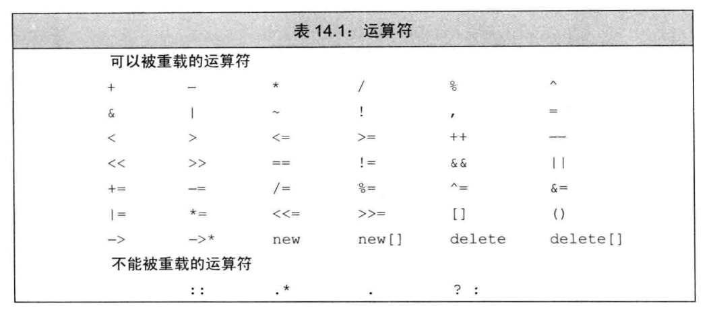

C++ Primer 第 III部分 类设计者的工具
目录
- 第 13 章 拷贝控制
- 第 14 章 重载运算与类型转换
- 第 15 章 面向对象程序设计
- 第 16 章 模板与泛型编程
第 13 章 拷贝控制
当定义一个类时，我们显示地或隐士地指定在此类型的对象拷贝、移动、赋值和销毁时做什么。一个类通过定义五种特殊的成员函数来控制这些操作，包括： 拷贝构造函数 、 拷贝赋值运算符 、 移动构造函数 、 移动赋值运算符 、 析构函数 。拷贝和移动构造函数定义了当用同类型的另一个对象初始化本对象时做什么。拷贝和移动赋值运算符定义了讲一个对象赋予同类型的另一个对象时做什么。析构函数定义了当此类型对象销毁时做什么。我们称这些操作为 拷贝控制操作 。
13.1 拷贝、赋值与销毁
13.1.1 拷贝构造函数
如果一个构造函数的第一个参数时自身类类型的引用，且任何额外参数都有默认值，则此构造函数时拷贝构造函数。
class Foo { public: Foo(); // 默认构造函数 Foo(const Foo&); // 拷贝构造函数 // ... };
虽然我们可以定义一个接受非 const 引用的拷贝构造函数，但此参数几乎总是一个 const 的引用。拷贝构造函数在几种情况下都会被隐式地使用。因此，拷贝构造函数通常不应是 explicit 的。
合成构造函数
如果我们没有为一个类定义拷贝构造函数，编译器会为我们定义一个。与合成默认构造函数不同，即是我们定义了其他构造函数，编译器也会为我们合成一个拷贝构造函数。
如我们将在 13.1.6 节中所见，对某些类来说， 合成拷贝构造函数 用来阻止我们拷贝该类类型的对象。而一般情况，合成的拷贝构造函数会将其参数的成员逐个拷贝到正在创建的对象中。编译器从给定对象中依次将每个非 static 成员拷贝到正在创建的对象中。
每个成员的类型决定它如何拷贝：对类类型的成员，会使用其拷贝构造函数来拷贝；内置类型的成员则直接拷贝。虽然我们不能拷贝一个数组，但合成构造函数会逐元素地拷贝一个数组类型的成员。如果数组元素是类类型，则使用元素的拷贝构造函数来进行拷贝。
拷贝初始化
当使用直接初始化时，我们实际上是要求编译器使用普通的函数匹配来算则与我们提供的参数最匹配的构造函数。当我们使用 拷贝初始化 时，我们要求编译器将右侧运算对象拷贝到正在创建的对象中，如果需要的话还要进行类型转换。
拷贝初始化不仅在我们用=定义变量时会发生，在下列情况也会发生。
- 将一个对象作为实参传递给一个非引用类型的形参
- 从一个返回类型为非已用类型的函数返回一个对象
- 用花括号列表初始化一个数组中的元素或一个聚合类中的成员（参见 7.5.5 节）
某些类类型还会对它们所分配的对象使用拷贝初始化。例如，当我们初始化标准库容器或是调用其 insert 或 push 成员时，容器会对其元素进行拷贝初始化。与之相对的，用 emplace 成员创建的元素都进行直接初始化。
参数和返回值
拷贝构造函数被用来初始化非引用类类型参数，这一特性解释了为什么拷贝构造函数自己的参数必须是引用类型。如果其参数不是引用类型，则调用永远也不会成功——为了调用拷贝构造函数，我们必须拷贝它的实参，但为了拷贝实参，我们又需要调用拷贝构造函数，如此无限循环。
拷贝初始化的限制
如前所述，如果我们使用的初始化值要求通过一个 explicit 的构造函数来进行类型转换，那么使用拷贝初始化还是直接初始化就不是无关紧要的了：
vector<int> v1(10); // 正确：直接初始化 vector<int> v2 = 10; // 错误：接受大小参数的构造函数是explicit的 void f(vector<int>); // f的参数进行拷贝初始化 f(10); // 错误：不能用一个explicit的构造函数拷贝一个实参 f(vector<int>(10)); // 正确：从一个int直接构造一个临时vector
直接初始化 v1 是合法的，但 看起来与之等价的拷贝初始化 v2 则是错误的，因为 vector 的接受单一大小参数的构造函数是 explicit 的。出于同样的原因，当传递一个实参或从函数返回一个值时，我们不能隐式使用一个 explicit 构造函数。如果我们希望使用一个 explicit 构造函数，就必须显式地使用，就像此代码中最后一样那样。
编译器可以绕过拷贝构造函数
在拷贝初始化过程中，编译器可以（但不是必须）跳过拷贝/移动构造函数，直接创建对象。即，编译器被允许将下面的代码
string null_book = "9-999-99999-9"; // 拷贝初始化
改写为
string null_book("9-999-99999-9"); // 编译器略过了拷贝构造函数
但是，即使编译器略过了拷贝/移动构造函数，但在这个程序点上，拷贝/移动构造函数必须是存在且可访问的（例如，不能是 private 的）。
13.1.2 拷贝赋值运算符
与拷贝构造函数一样，如果类未定义自己的拷贝赋值运算符，编译器会为它合成一个。
重载赋值运算符
重载运算符本质上是函数，其名字由 operator 关键字后接表示要定义的运算符的符号组成。因此，赋值运算符就是一个名为 operator=的函数。类似于任何其他函数，运算符函数也有一个返回类型和参数列表。
重载运算符的参数表示运算符的运算对象。某些运算符，包括赋值运算符。必须定义为成员函数。如果一个一个运算符是一个成员函数，其左侧运算对象就绑定到隐式的 this 参数。对一个二元运算符，例如赋值运算符，其右侧运算对象作为显式参数传递。
拷贝赋值运算符接受一个与其所在类相同类型的参数：
class Foo { public: Foo& operator=(const Foo&); // ... };
为了与内置类型的赋值保持一直，赋值运算符通常返回一个指向其左侧运算对象的引用。另外值得注意的是，标准库通常要求保存在容器中的类型要具有赋值运算符，且其返回值是左侧运算对象的引用。
Best Practices：
赋值运算符通常应该返回一个指向其左侧运算对象的引用。
合成拷贝赋值运算符
与处理拷贝构造函数一样，如果一个类未定义自己的拷贝赋值运算符，编译器会为它生成一个 合成拷贝赋值运算符 。类似于拷贝构造函数，对于某些类，合成拷贝赋值运算符来禁止该类型对象的赋值。如果拷贝赋值运算符并非出于此目的，它会将右侧运算对象的每个非 static 成员赋予左侧运算对象的对应成员，这一工作是通过成员类型的拷贝赋值运算符来完成的。对于数组类型的成员，逐个赋值数组元素。合成拷贝赋值运算符返回一个指向其左侧运算对象的引用。
13.1.3 析构函数
析构函数执行与构造函数相反的操作：构造函数初始化对象的非 static 数据成员，还可能做一些其他工作；析构函数释放对象使用的资源，并销毁对象的非 static 数据成员。
析构函数是类的一个成员函数，名字由波浪号接类名构成。它没有返回值，也不接受参数。
析构函数完成什么工作
在一个构造函数中，成员的初始化是在函数体执行之前完成，且按照它们在类中出现的顺序进行初始化。在一个析构函数中，首先执行函数体，然后销毁成员。成员按初始化顺序的逆序销毁。
Note：
隐式销毁一个内置指针类型的成员不会 delete 它所指向的对象。
与普通指针不同，智能指针是类类型，所以具有析构函数。因此，与普通指针不同，智能指针成员在析构阶段会被自动销毁。
什么时候会调用析构函数
无论何时一个对象被销毁，就会自动调用其析构函数：
- 当变量在离开其作用域时被销毁。
- 当一个对象被销毁时，其成员被销毁。
- 容器（无论是标准容器还是数组）被销毁时，其元素被销毁。
- 对于动态分配的对象，当对指向它的指针应用 delete 运算符时被销毁
- 对于临时对象，当创建它的完整表达式结束时被销毁
Note：
当指向一个对象的引用或指针离开作用域时，析构函数不会执行。
合成析构函数
当一个类未定义自己的析构函数时，编译器会为它定义一个 合成析构函数 。类似拷贝构造函数和拷贝赋值运算符，对于某些类，合成析构函数被用来阻止该类型的对象被销毁。如果不是这种情况，合成析构函数的函数体就为空。
认识到析构函数体自身并不直接销毁成员函数是非常重要的。成员是在析构函数体之后隐含的析构阶段中被销毁的。在整个对象的销毁过程中，析构函数体是作为成员销毁步骤之外的另一部分而进行的。
13.1.4 三/五法则
如前所述，有三个基本操作可以控制类的拷贝操作：拷贝构造函数、拷贝赋值运算符和析构函数。而且，在新标准下，一个类还可以定义一个移动构造函数和一个移动赋值运算符。
C++语言并不要求我们定义所有这些操作：可以只定义其中一个或两个，而不必定义所有。但是，这些操作通常应该被看作一个整体。通常，只需要其中一个操作，而不需要定义所有操作的情况是很少见的。
需要析构函数的类也需要拷贝和赋值操作
当我们决定一个类是否要定义它自己版本的拷贝控制成员时，一个基本原则是首先确定这个类是否需要一个析构函数。通常，对析构函数的需求比对拷贝构造函数或赋值运算符的需求更为明显。如果一个类需要一个析构函数，我们几乎可以肯定它也需要一个拷贝构造函数和一个拷贝赋值运算符。
Tip：
如果一个类需要自定义析构函数，几乎可以肯定它也需要自定义拷贝赋值运算符和拷贝构造函数。
需要拷贝操作的类也需要赋值操作，反之亦然
如果一个类需要一个拷贝构造函数，几乎可以肯定它也需要一个拷贝赋值运算符。反之亦然——如果一个类需要一个拷贝赋值运算符，几乎可以肯定它也需要一个拷贝构造函数。然而，无论时需要拷贝构造函数还是需要拷贝赋值运算符都不必然意味着也需要析构函数。
13.1.5 使用=default
我们可以通过将拷贝控制成员定义为=default 来显示地要求编译器生成合成的版本。
当我们在类内使用=default 修饰成员的声明时，合成的函数将隐式地声明为内联的（就像任何其他前类内声明的成员一样）。如果我们不希望合成的成员时内联函数，应该只对成员的类外定义使用=default。
Note：
我们只能对具有合成版本的成员函数使用=default（即，默认构造函数或拷贝控制成员）。
13.1.6 阻止拷贝
Best Practices：
大多数类应该定义默认构造函数、拷贝构造函数和拷贝赋值运算符，无论是隐式地还是显式地。
虽然大多数类应该定义（而且通常也的确定义了）拷贝构造函数和拷贝赋值运算符，但对某些类来说，这些操作没有合理的意义。在此情况下，定义类时必须采用某种机制阻止拷贝或赋值。
定义删除的函数
在新标准下，我们可以通过将拷贝构造函数和拷贝赋值运算符定义为 删除的函数 来阻止拷贝。删除的函数时这样一种函数：我们虽然声明了它们，但不能以任何方式使用它们。在函数的参数列表后加上=delete 来只出我们希望它定义为删除的。
与=defualt 不同，=delete 必须出现在函数第一次声明的时候，这个差异与这些声明的含义在逻辑上是吻合的。一个默认的成员只影响为这个成员而生成的代码，因此=defualt 直到编译器生成代码时才需要。而另一方面，编译器需要直到一个函数是删除的，以便禁止试图使用它的操作。
与=deafult 的另一个不同之处是，我们可以对任何函数指定=delete（我们只能对编译器可以合成的默认构造函数或拷贝控制成员使用=defualt）。虽然删除函数的主要用途是禁止拷贝控制成员，但当我们希望引导函数匹配过程时，删除函数有时也是有用的。
析构函数不能是删除的成员
值得注意的是，我们不能删除析构函数。如果析构函数被删除，就无法销毁此类型的对象了。对于一个删除了析构函数的类型，编译器将不允许定义该类型的变量或创建该类的临时对象了。而且，如果一个类有某个成员的类型删除了析构函数，我们也不能定义该类的变量或临时对象。因为如果一个成员的析构函数是删除的，则该成员无法被销毁。而如果一个成员无法被销毁，则对象整个也就无法被销毁了。
WARNING：
对于析构函数已删除的类型，不能定义该类型的变量或释放指向该类型动态分配对象的指针。
合成的拷贝哦嗯直成员可能是删除的
如前所述，如果我们未定义拷贝控制成员，编译器会为我们定义合成的版本。类似的，如果一个类未定义构造函数，编译器会为其合成一个默认构造函数。对某些类来说，编译器将这些合成的成员定义为删除的函数：
- 如果类的某个成员的析构函数是删除的或不可访问的（例如，是 private 的），则类的合成析构函数被定义为删除的。
- 如果类的某个成员的拷贝构造函数是删除的或不可访问的，则类的合成拷贝构造函数被定义为删除的。如果类的某个成员的析构函数是删除的或不可访问的，则类合成的拷贝构造函数也被定义为删除的。
- 如果类的某个成员的拷贝赋值运算符是删除的或不可访问的，或是类有一个 const 的或引用成员，则类的合成拷贝赋值运算符被定义为删除的。
- 如果类的某个成员的析构函数是删除的或不可访问的，或是类有一个引用成员，它没有类内初始化器（参见 2.6.1），或是类有一个 const 成员，它没有类内初始化器且类型未显式定义默认构造函数，则该类的默认构造函数被定义为删除的。
本质上，这些规则的含义是：如果一个类有数据成员不能默认构造、拷贝、复制或销毁，则对应的成员函数被定义为删除的。
虽然我们可以将一个新值赋予一个引用成员，但这样做改变的是引用指向的对象的值，而不是引用本身。如果为这样的类合成拷贝赋值运算符，则赋值后，左侧运算对象仍然指向与赋值前一样的对象，而不会与右侧运算对象指向相同的对象。由于这种行为看起来并不是我们所期望的，因此对于有引用成员的类，合成拷贝赋值运算符被定义为删除的。
Note：
本质上，当不可能拷贝、赋值或销毁类的成员时，类的合成拷贝控制成员就被定义为删除的。
private 拷贝控制
新标准发布之前，类是通过将其拷贝构造函数和拷贝赋值运算符声明为 private 的来阻止拷贝的。
声明但不定义一个成员函数是合法的，对此只有一个例外，我们将在 15.2.1 节中介绍。试图访问一个未定义的成员将导致一个链接时错误。通过声明（但不定义）private 的拷贝构造函数，我们可以预先阻止任何拷贝该类型对象的企图：试图拷贝对象的用户代码将在编译器阶段被标记为错误；成员函数或友元函数中的拷贝错误将会导致链接时错误。
Best Practices：
希望阻止拷贝的类应该使用=delete 来定义它们自己的拷贝构造函数和拷贝赋值运算符，而不应该将它们声明为 private 的。
13.2 拷贝控制和资源管理
通常，管理类外资源的类必须定义拷贝控制成员。入股我们在 13.1.4 节中所见，这种类需要通过析构函数来释放对象所分配的资源。一旦一个类需要析构函数，那么它几乎肯定也需要一个拷贝构造函数和一个拷贝赋值运算符。
为了定义这些成员，我们首先必须确定此类型对象的拷贝语义。一般来说，有两种选择：可以定义拷贝操作，是类的行为看起来像一个值或者像一个指针。
类的行为像一个值，意味着它应该也有自己的状态。当我们拷贝一个像值的对象时，副本和原对象是完全独立的。改变副本不会对原对象有任何影响，反之亦然。
行为像指针的类则共享状态。当我们拷贝一个这种类的对象时，副本和原对象使用相同的底层数据。改变副本也会改变原对象，反之亦然。
13.2.1 行为像值的类
类值拷贝赋值运算符
赋值运算符通常组合了析构函数和构造函数的操作。类似析构函数，赋值操作会销毁左侧运算对象的资源。类似拷贝构造函数，赋值操作会从右侧运算对象拷贝数据。但是，非常重要的一点是，这些操作是以正确的顺序执行的，即使将一个对想赋予它自身，也保证正确。而且，如果可能，我们编写的赋值运算还应该是异常安全的——当以常发生时能将左侧运算对象置于一个有意义的状态。
关键概念：赋值运算符
当你编写赋值运算符时，有两点需要记住：
- 如果将一个对象赋予它自身，赋值运算符必须能正常工作
- 大多数赋值运算符组合了析构函数和拷贝构造函数的工作
当你编写一个赋值运算符时，一个好的模式时先将右侧运算对象拷贝到一个局部临时对象中。当拷贝完成后，销毁左侧运算对象的现有成员就是安全的了。一旦一个左侧运算对象的资源被销毁，就只剩下将数据从临时对象拷贝到左侧运算对象的成员中了。
WARNING：
对于一个赋值运算符来说，正确工作时非常正要的，即使是将一个对象赋予它自身，也要能正确工作。一个好的方法是在销毁左侧运算对象资源之前拷贝右侧运算对象。
13.2.2 定义行为像指针的类
令一个类展现类似指针的行为的最好办法是使用 shared_ptr 来管理类中的资源。拷贝（或赋值）一个 shared_ptr 会拷贝（赋值）shared_ptr 所指向的指针。shared_ptr 类自己记录有多少用户共享它所指向的对象。当没有用户使用对象时，shared_ptr 类负责释放资源。
单是，有时我们希望直接管理资源。在这种情况下，使用 引用计数 就很有用了。
引用计数
引用计数的工作方式如下：
- 除了初始化对象外，每个构造函数（拷贝构造函数除外）还要创建一个引用计数，用来记录有多少对象与正在创建的对象共享状态。当我们创建一个对象时，只有一个对象共享状态，因此将计数器初始化为 1.
- 拷贝构造函数不分配新的计数器，而是拷贝给定对象的数据成员，包括计数器。拷贝构造函数递增共享的计数器，只出给定对象的状态又被一个新用户所共享。
- 析构函数递减计数器，指出共享状态的用户少了一个。如果计数器变为 0，则析构函数释放状态。
- 拷贝赋值运算符递增右侧运算对象的计数器，递减左侧运算对象的计数器。如果左侧运算对象的计数器变为 0，意味着它的共享状态没有用户了，拷贝赋值运算符就必须销毁状态。
唯一的难题时确定在哪里存放引用计数。解决此问题的一种方法是计数器保存在动态内存中。当创建一个对象时，我们也分配一个新的计数器。当拷贝或赋值对象时，我们拷贝指向计数器的指针。使用这种方法，副本和原对象都会指向相同的计数器。
13.3 交换操作
除了定义拷贝控制成员，管理资源的类通常还定义一个名为 swap 的函数。对于那些与重排元素顺序的算法一起使用的类，定义 swap 时非常重要的。这类算法在需要交换两个元素时会调用 swap。
如果一个类定义了自己的 swap，那么算法将使用类自定义版本。否则，算法将使用标准库定义的 swap。
编写我们自己的 swap 函数
Note：
与控制拷贝成员不同，swap 并不是必要的。但是，对于分配了资源的类，定义 swap 可能是一种很重要的优化手段。
swap 函数应该调用 swap，而不是 std::swap
正确的 swap 函数如下所示：
void swap(Foo &lhs, Foo, &rhs) { using std::swap; swap(lhs.h, rhs.h); // 使用HasPtr版本的swap // 交换类型Foo的其他成员 }
每个 swap 调用应该都是未加限定的。即，每个调用都应该是 swap，而不是 std::swap。如果存在类型特定的 swap 版本，其匹配程度会优于 std 中定义的版本，原因我们将在 16.3 节中进行解释。因此，如果存在类型特定的 swap 版本，swap 调用会与之匹配。如果不存在类型特定的版本，则会使用 std 中的版本（假定作用域中有 using 声明）。
非常仔细的读者可能会奇怪为什么 swap 函数中的 using 声明没有隐藏 HasPtr 版本的 swap 声明。我们将在 18.2.3 节中解释为什么这段代码能正常工作。
在赋值运算符中使用 swap
定义 swap 的类通常用 swap 来定义它们的赋值运算符。这些运算符使用了一种名为 拷贝并交换 的技术。这种技术将左侧运算对象与右侧运算对象的一个副本进行交换：
// 注意rhs是按值传递的，意味着HasPtr的拷贝构造函数 // 将右侧运算对象中的string拷贝到rhs HasPtr& HasPtr::operator=(HasPtr rhs) { // 交换左侧运算对象和局部变量rhs的内容 swap(*this, rhs); // rhs现在指向本对象曾经使用的内容 return *this; // rhs被销毁，从来delete了rhs中的指针 }
这个技术的有趣之处是它自动处理了自赋值情况且天然就是异常安全的。它通过在改变左侧运算对象之前拷贝右侧运算对象保证了自赋值的正确，这与我们在原来的赋值运算符中使用的方法是一致的。
Tip：
使用拷贝和交换的赋值运算符自动就是异常安全的，且能正确处理自赋值。
13.4 拷贝控制示例
Best Practices：
拷贝赋值运算符通常执行拷贝构造函数和析构函数中也要做的工作。这种情况下，公共的工作应该放在 private 的工具函数中完成。
13.6 对象移动
新标准的一个最主要的特性是可以移动而非拷贝对象的能力。如我们在 13.1.1 节中所见，很多情况下都会发生对象拷贝。在其中某些情况下，对象拷贝后就立即被销毁了。在这些情况下，移动而非拷贝对象会大幅度提升性能。
在旧 C++标准中，没有直接的方法移动对象。因此，即使不必拷贝对象的情况下，我们也不得不拷贝。如果对象较大，或者是对象本身要求分配内存空间（如 string），进行不必要的拷贝代价非常高。类似的，在旧版本的标准库中，容器中所保存的类必须是可拷贝的。但在新标准中，我们可以用容器保存不可拷贝的类型，只要它们能被移动即可。
Note：
标准库容器、string 和 shared_ptr 类既支持移动也支持拷贝。IO 类和 unique_ptr 类可以移动但不能拷贝。
13.6.1 右值引用
wile 支持移动操作，新标准引入了一种新的引用类型—— 右值引用 。所谓右值因一哦嗯就是必须绑定到右值的引用。我们通过&&而不是&来获得右值引用。如我们将要看到的，右值引用有一个重要的性质——只能绑定到一个将要销毁的对象。因此，我们可以自由地将一个右值引用的资源“移动”到另一个对象中。
回忆一下，左值和右值是表达式的属性（参见 4.1.1 节），一些表达式生成或要求左值，而另外一些则生成或要求右值。一般而言，一个左值表达式表示的是一个对象的身份，而一个右值表达式表示的是对象的值。
类似任何引用,一个右值引用也不过是某个对象的另一个名字而已。如我们所值，对于常规引用（为了与右值引用区分开，我们称之为 左值引用 ），我们不能将其绑定到要求转换的表达式、字面常量或是返回右值的表达式。右值引用有着完全相反的绑定特性：我们可以将一个右值引用绑定到这类表达式上，但不能将一个右值引用直接绑定到一个左值上：
int i = 42; int &r = i; // 正确：r引用i int &&rr = i; // 错误：不能将一个右值引用绑定到一个左值上 int &r2 = i * 42; // 错误：i*42是一个右值 const int &r3 = i * 42; // 正确：我们可以将一个const的引用绑定到一个右值上 int &&rr2 = i * 42; // 正确：将rr2绑定到乘法结果上
返回左值引用的函数，连同赋值、下标、解引用和前置递增/递减运算符，都是返回左值的表达式的例子。我们可以将一个左值引用绑定到这类表达式的结果上。
返回非引用类型的函数，连同算术、关系、位以及后置递增/递减运算符，都生成右值。我们不能将一个左值引用绑定到这类表达式上，但我们可以将一个 const 左值引用或者一个右值引用绑定到这类表达式上。
左值持久；右值短暂
考察左值和右值表达式的列表，两者相互区别之处就很明显了：左值有持久的状态，而右值要么是字面常量，要么是在表达式求值过程中创建的临时对象。
由于右值引用只能绑定到临时对象，我们得知
- 所引用的对象将要被销毁
- 该对象没有其他用户
这两个特性意味着：使用右值引用的代码可以自由地接管所引用的对象的资源。
Note：
右值引用指向将要被销毁的对象。因此，我们可以从绑定到右值引用的对象“窃取”状态。
变量是左值
变量可以看作只有一个运算对象而没有运算符的表达式，虽然我们很少这样看待变量。类似其他任何表达式，变量表达式也有左值/右值属性。变量表达式都是左值。带来的结果就是，我们不能将一个右值引用绑定到一个右值引用类型的变量上。
Note：
变量是左值，因此我们不能将一个右值引用直接绑定到一个变量上，即使这个变量是右值引用类型也不行。
标准库 move 函数
虽然不能将一个右值引用直接绑定到一个左值上，但我们可以显示地将一个左值转换为对应的右值引用类型。我们还可以通过调用一个名为 move 的新标准库函数来获得绑定到左值上的右值引用，此函数定义在头文件 utility 中。move 函数使用了我们将在 16.2.6 节中描述的机制来返回给定对象的右值引用。
int &&r3 = std::move(rr1); // ok
move 调用告诉编译器：我们有一个左值，但我们希望像一个右值一样处理它。我们必须认识到，调用 move 就意味着承诺；除了对 rr1 赋值或销毁它外，我们将不再使用它。在调用 move 之后，我们不能对移后源对象的值做任何假设。
Note：
我们可以销毁一个移后源对象，也可以赋予它新值，但不能使用一个移后源对象的值
13.6.2 移动构造函数和移动赋值运算符
类似拷贝构造函数，移动构造函数的第一个参数是该类类型的一个引用，不同拷贝构造函数的是，这个引用参数在移动构造函数中是一个右值引用。与拷贝构造函数一样，任何额外的参数必须有默认实参。
除了完成资源移动，移动构造函数还必须确保移后原对象处于这样一个状态——销毁它是无害的。特别是，一旦资源完成移动，源对象必须不再指向被移动的资源——这些资源的所有权已经归属新创建的对象。
StrVec::StrVec(StrVec &&s) noexcept // 以冬操作不应抛出任何异常 // 成员初始化器接官s中的资源 : elements(s.elements), first_free(s.first_free), cap(s.cap) { // 令s进入这样的状态——对其运行析构函数是安全的 s.elements = s.first_free = s.cap = nullptr; }
与拷贝构造函数不同，移动构造函数不分配任何新内存；它接管给定的 StrVec 中的内存。接官内存之后，它将给定对象中的指针置位 nullptr。这样就完成了从给定对象的移动操作，此对象将继续存在。最终，移后源对象会被销毁，意味着将在其上运行析构函数。
移动操作、标准库容器和异常
由于移动操作“窃取”资源，它通常不分配任何资源。因此，移动操作通常不会抛出任何异常。当遍写一个不抛出异常的移动操作时，我们应该将此事通知标准库。我们将看到，除非标准库知道我们的移动构造函数不会抛出异常，否则它会认为移动我们的类对象时可能会抛出异常，并且为了处理这种可能而做一些额外的工作。
一种通知标准库的方法是在我们的构造函数中指明 noexcept。我们必须在类头文件的声明中和定义中（如果定义在类外的话）都指定 noexcept。
Note：
不抛出异常的移动构造函数和移动赋值运算符必须标记为 noexcept。
移动赋值运算符
移动赋值运算符执行与析构函数和移动构造函数相同的工作。与移动构造函数一样，如果我们的移动赋值运算符不抛出任何异常，我们就应该将它标记为 noexcept。类似拷贝赋值运算符，移动赋值运算符必须正确处理自赋值。
移后源对象必须可析构
从一个对象移动数据并不会销毁此对象，但有时在移动对象操作完成后，源对象会被销毁。因此，当我们编写一个移动操作时，必须确保移后源对象进入一个可析构的状态。
除了将移后源对象置为析构安全的状态之外，移动操作还必须保证对象仍然是有效的。一般来说，对象有效就是指可以安全地为其赋予新值或者可以安全地使用而不依赖其当前值。另一方面，移动操作对移后对象中留下的值没有任何要求。因此，我们的程序不应该依赖于移后源对象中的数据。
WARNING：
在移动操作之后，移后源对象必须保持有效的、可析构的状态，但是用户不能对其值进行任何假设。
合成的移动操作
与拷贝操作不同，编译器根本不会为某些类合成移动操作。特别是，如果一个类定义了自己的拷贝构造函数、拷贝赋值运算符或者析构函数，编译器就不会为它合成移动构造函数和移动赋值运算符了。因此，某些类就没有移动构造函数或移动赋值运算符。如我们将在 477 页所见，如果一个类没有移动操作，通过正常的函数匹配，类会使用对应的拷贝操作来代替移动操作。
只有当一个类没有定义任何自己版本的拷贝控制成员，且类的每个非 static 数据成员都可以移动时，编译器才会为它合成移动构造函数或移动赋值运算符。编译器可以移动内置类型的成员。如果一个成员时类类型，且该类有对应的移动操作，编译器也能移动这个成员。
Note：
只有当一个类没有定义任何自己版本的拷贝控制成员，且它的所有数据成员都能移动构造或移动赋值时，编译器才会为它合成移动构造函数或移动赋值运算符。
与拷贝操作不同，移动操作永远不会隐式定义为删除的函数。但是，如果我们显示地要求编译器生成=defualt 的移动操作，且编译器不能移动所有成员，则编译器会将移动操作定义为删除的函数。除了一个重要例外，什么时候将合成的移动操作定义为删除的函数遵循与定义删除的合成拷贝操作类似的原则：
- 与拷贝构造函数不同，移动构造函数被定义为删除的函数的条件是是：有类成员定义了自己的拷贝构造函数且未定义移动构造函数，或者是有类成员未定义自己的拷贝构造函数且编译器不能为其合成移动构造函数。移动赋值运算符的情况类似。
- 如果有类成员的移动构造函数或移动赋值运算符被定义为删除的或是不可访问的，则类的移动构造函数或移动赋值运算符被定义为删除的。
- 类似拷贝构造函数，如果类的析构函数被定义为删除的或不可访问的，则类的移动构造函数被定义为删除的。
- 类似拷贝赋值运算符，如果有类成员是 const 的或是引用，则类的移动赋值运算符被定义为删除的。
Note：
定义了一个移动构造函数或移动赋值运算符的类必须也定义自己的拷贝操作，否则，这些成员默认地被定义为删除的。
移动右值，拷贝左值……
如果一个类既有移动构造函数，也有拷贝构造函数，编译器使用普通的函数匹配规则来确定使用哪个函数。
……但如果没有移动构造函数，右值也被拷贝
Note：
如果一个类有一个可用的拷贝构造函数而没有移动构造函数，则其对象是通过拷贝构造函数来“移动”的。拷贝赋值运算符和移动赋值运算符的情况类似。
拷贝并交换赋值运算符和移动操作
class HasPtr { public: // 添加的移动构造函数 HasPtr(HasPtr &&p) noexcept : ps(p.ps), i(p.i) { p.ps = 0; } HasPtr& operator=(HasPtr rhs) { swap(*this, rhs); return *this; } // i其他成员的定义，同13.2.1节 };
现在让我们观察赋值运算符。此运算符有一个非引用参数，这意味着此参数要进行拷贝初始化。依赖于实参的类型，拷贝初始化要么使用拷贝构造函数，要么使用移动构造函数——左值被拷贝，右值被移动。因此，单一的赋值运算符就实现了拷贝赋值运算符和移动赋值运算符两种功能。
建议：更新三/五法则
所有五个拷贝控制成员应该看作一个整体：一般来说，如果一个类定义了任何一个拷贝操作，它就应该定义所有五个操作。如前所述，某些类必须定义拷贝构造函数、拷贝赋值运算符和析构函数才能正确功能。这些类通常拥有一个资源，而拷贝成员必须拷贝此资源。一般来说，拷贝一个资源会导致一些额外开销。在这种拷贝并非必要的情况下，定义了移动构造函数的移动赋值运算符的类就可以避免此问题。
移动迭代器
新标准库中定义了一种 移动迭代器 适配器。一个移动迭代器通过改变给定迭代器的解引用运算符的行为来适配此迭代器。一般来说，一个迭代器的解引用运算符返回一个指向元素的左值。与其他迭代器不同，移动迭代器的解引用运算符生成一个右值引用。
我们通过调用标准库的 make_move_iterator 函数将一个普通迭代器转换为一个移动迭代器。此函数接受一个迭代器参数，返回一个移动迭代器。
建议：不能随意使用移动操作
由于一个移后源对象具有不确定的状态，对其调用 std::move 是危险的。当我们调用 move 时，必须绝对确认移后源对象没有其他用户。
通过在类代码中小心地调用 move，可以大幅度提升性能。而如果随意在普通用户代码（与类实现代码相对）中使用移动操作，很可能导致莫名其妙的、难以查找的错误，而难以提高升应用程序性能。
Best Practices：
在移动构造函数和移动赋值运算符这些类实现代码之外的地方，只有当你确信需要进行移动操作且移动操作时安全的，才可以使用 std::move
13.6.3 右值引用和成员函数
除了构造函数和赋值运算符之外，如果一个成员函数同时提供拷贝和移动版本，它也能从中受益。这种允许移动的成员函数通常使用与拷贝/移动构造函数和赋值运算符相同的参数模式——一个版本接受一个指向 const 的左值引用，第二个版本接受一个指向非 const 的右值引用。
一般来说，我们不需要为函数操作定义接受一个 const X&&或是一个（普通的）X&参数的版本。当我们希望从实参“窃取”数据时，通常传递一个右值引用。为了达到这一目的，实参不能是 const 的。类似的，从一个对象进行拷贝的操作不应该改变该对象。因此，通常不需要定一个接受一个（普通的）X&参数的版本。
Note：
区分移动和拷贝的重载函数通常有一个版本接受一个 const T&，而另一个版本接受 T&&。
右值和左值引用成员函数
有时，右值的使用方式可能令人惊讶：
s1 + s2 = "wow!";
此处我们对两个 string 的连接结果——一个右值，进行了赋值。
在旧标准中，我们没有办法阻止这种使用方式。为了维持向后兼容性，新标准库类仍然允许向右值赋值。但是，我们可能希望在自己的类中阻止这种用法。在此情况下，我们希望强制左侧运算对象（即，this 指向的对象）是一个左值。
我们指出 this 的左值/右值属性的方式与定义 const 成员函数相同（参见 7.1.2 节），即，在参数列表后放置一个 *引用限定符*：
class Foo { public: Foo &operator=(const Foo&) &; // 只能向可修改的左值赋值 // Foo的其他参数 }; Foo &Foo::operator=(const Foo &rhs) & { // 执行将rhs赋予本对象所需的工作 return *this; }
引用限定符可以是&或&&，分别指出 this 可以指向一个左值或右值。类似 const 限定符，引用限定符只能用于（非 static）成员函数，且必须同时出现在函数的声明和定义中。
一个函数可以同时用 const 和引用限定。在此情况下，引用限定符必须跟随在 const 限定符之后。
重载和引用函数
就像一个成员函数可以根据是否有 const 来区分其重载版本一样，引用限定符也可以区分重载版本。而且，我们可以综合引用限定符和 const 来区分一个成员函数的重载版本。
当我们定义 const 成员函数时，可以定义两个版本，唯一的差别是一个版本有 const 限定而另一个没有。引用限定的函数则不一样。如果我们定义两个或两个以上具有相同名字和相同参数列表的成员函数，就必须对所有函数都加上引用限定符，或者所有都不加。
Note：
如果一个成员函数有引用限定符，则具有相同参数列表的所有版本都必须有引用限定符。
第 14 章 重载运算与类型转换
14.1 基本概念
重载的运算符时具有特殊名字的函数：它们的名字由关键 operator 和其后要定义的运算符号共同组成。和其他前函数一样，重载的运算符也包含返回类型、参数列表以及函数体。
Note：
当一个重载的运算符时成员函数时，this 绑定到左侧运算对象。成员运算符函数的（显式）参数数量比运算对象的数量少一个。
我们只能重载已有的运算符，而无权发明新的运算符号。例如，我们不能提供 operator**来执行幂操作。
有四个符号（+、-、*、&）既是一元运算符也是二元运算符，所有这些运算符都能被重载，从参数的数量我们可以推断到底定义的时哪种运算符。
对于一个重载的运算符来说，其优先级和结合律与对应的内置运算符保持一致。

某些运算符不应该被重载
回忆之前介绍过的，某些运算符指定了运算对象求值的顺序。因为使用重载的运算符本质上是一次函数调用，所以这些关于运算对象求值顺序的规则无法应用到重载的运算符上。特别是，逻辑与运算符、逻辑或运算符和逗号运算符的运算对象求值顺序规则无法保留下来。除此之外，&&和||运算符的重载版本也无法保留内置运算符的短路求值属性，两个运算对象总是会被求值。
因为上述运算符的重载版本无法保留求值顺序和/或短路求值属性，因此不建议重载它们。当代码使用了这些运算符的重载版本时，用户可能会突然发现他们一直习惯的求值规则不再适用。
还有一个原因使得我们一般不重载欧好运算符和取地址运算符：C++语言定义了这两种运算符用于类类型对象时的特殊含义，这一点与大多数运算符都不相同。因为这两种运算符已经有了内置的含义，所以一般来说它们不应该被重载，否则它们的行为将异于常态，从而导致类的用户无法适应。
Best Practices：
通常情况下，不应该重载逗号、取地址、逻辑与和逻辑或运算符。
使用内置类型一直的含义
提示：尽量明智地使用运算符重载
在实际编程过程中，一般没有特别明显的滥用运算符重载的情况。然而经常发生的一种情况是，程序员可能会强行扭曲了运算符“常规”含义使得其适应某种给定的类型，这显然是我们不希望发生的。因此我们的建议是：只有当操作的含义对于用户来说清晰明了时才使用运算符。如果用户对运算符可能有几种不同的理解，则使用这样的运算符将产生二义性。
选择作为成员或者非成员函数
当我们定义重载的运算符时，必须首先决定是将其声明为类的成员函数还是声明为一个普通的非成员函数。在某些时候我们别无选择，因为有的运算符必须作为成员；另一些情况下，运算符作为普通函数比作为成员更好。
下面的准则有助于我们在将运算符定义为成员函数还是普通的非成员函数做出抉择：
- 赋值（=）、下标（[ ]）、调用（( )）和成员访问箭头(->)运算符必须是成员。
- 复合赋值运算符一般来说应该是成员，但并非必须，这一点与赋值运算符略有不同。
- 改变对象状态的运算符或者与给定类型密切相关的运算符，如递增、递减和解引用运算符，通常应该是成员。
- 具有对称性的运算符可能转换任意一段的运算对象，例如算符、相等性、关系和位运算符等，因此它们通常应该是普通的非成员函数。
14.2 输入和输出运算符
14.2.1 重载输出运算符<<
通常情况下，输出运算符的第一个形参是一个非常量 ostream 对象的引用。之所以 ostream 是非常量是因为向流写入内容会改变其状态；而改型惨是引用是因为我们无法直接赋值一个 ostream 对象。
第二个形参一般来说是一个常量的引用，改常量是我们想要打印的类类型。第二个形参是引用的原因是我们希望避免复制实参；而之所以该形参可以是常量因为（通常情况下）打印对象不会改变对象的内容。
为了与其他输出运算符保持一致，operator<<一般要返回它的 ostream 形参。
输出运算符尽量减少格式化操作
Best Practices：
通常，输出运算符应该主要负责打印对象的内容而非控制格式，输出运算符不应该打印换行符。
输入输出运算符必须是非成员函数
与 ostream 标准库兼容的输入输出运算符必须是普通的非成员函数，而不能是类的成员函数。
如果我们希望为类自定义 IO 运算符，则必须将其定义成非成员函数。当然，IO 运算符通常需要读写类的非公有数据成员，所以 IO 运算符一般被声明为友元。
14.2.2 重载输入运算符>>
通常情况下，输入运算符的第一个形参是运算符将要读取的流的引用，第二个形参时将要读入到的（非常量）对象的引用。该运算符通常会返回某个给定流的引用。第二个形参之所以必须是非常量是因为输入运算符本身的目的就是将数据读入到这个对象中。
Note：
输入运算符必须处理输入可能失败的情况，而输出运算符不需要。
输入时的错误
在执行输入运算符时可能发生下列错误：
- 当流函数错误类型的数据时读取操作可能失败。例如在读取完 bookNo 后，输入运算符假定接下来读入的是两个数字数据，则读取操作及后续对流的其他使用都将失败。
- 当读取操作到达文件末尾或者与到输入流的其他错误时也会失败。
在程序中我们没有逐个检查每个读取操作，而是等读取了所有数据后赶在使用这些数据前一次性检查。
如果在发生错误前对象已经有一部分被改变，则适时地将对象置为合法状态显得异常重要。通过将对象置位合法的状态，我们能（略微）保护使用者免于受到输入错误的影响。此是的对象处于可用状态，即它的成员都是被正确定义的。而且该对象也不会产生误导性的结果，因为它的数据在本质上确实是一体的。
Best Practices：
当读取操作发生错误时，输入运算符应该负责从错误中恢复。
14.3 算术和关系运算符
通常情况下，我们把算符和关系运算符定义成非成员函数以允许对左侧或右侧的运算对象进行转换。因为这些运算符一般不需要改变运算对象的状态，所以形参都是常量的引用。
Tip：
如果类同时定义了算术运算符和相关的复合赋值运算符，则通常情况下应该使用复合赋值来实现算术运算符。
14.3.1 相等运算符
- 如果一个类含有判断两个对象是否相等的操作，则它显然应该把函数定义成 operator==而非一个普通的命名函数：因为用户肯定那希望能使用==比较对象，所以提供了==意味着用户无须再费时费力学习并即以一个全新的函数名字。此外，类定义了==运算符之后也更容器使用标准库容其和算法。
- 如果类行一了 operator==，则该运算符应该能判断一组给定的对象中是否函数重复数据。
- 通常情况下，相等运算符应该具有传递性，换句话说，如果 a==b 和 b==c 都为真，则 a==c 也应该为真。
- 如果类定义了 operator==，则这各类也应该定义 operator!=。对于用户来说，当它们能使用==时也希望能使用!=，反之亦然。
- 相等运算符和不相等运算符中的一个应该把工作委托给另一个，这意味着其中一个运算符应该负责实际比较对象的工作，而另一个运算符则只是调用那个真正工作的运算符。
Best Practices：
如果某个类在逻辑上有相等性的含义，则该类应该定义 operator==，这样做可以使得用户更容易使用标准库算法来处理这个类。
14.3.2 关系运算符
定义了相等运算符的类也常常（但不总是）包含关系运算符。特别是，因为关联容器喝一些算法要用到小于运算符，所以定义 operator<会比较有用。
通常情况下关系运算符应该
- 定义顺序关系，令其与关联容器中对关键字的要求一致；并且
- 如果类同时也含有==运算符的话，则定义一种关系令其与==保持一致。特别是，如果两个对象是!=的，那么一个对象应该<另外一个。
Best Practices：
如果存在唯一一种逻辑可靠的<定义，则应该考虑为这个类定义<运算符。如果类同时还包含==，则当且仅当<的定义喝==产生的结果一致时才定义<运算符。
14.4 赋值运算符
Note：
我们可以重载赋值运算符。不论形参的类型是什么，赋值运算符都必须定义为成员函数。
复合赋值运算符
Best Practices：
赋值运算符必须定义成类的成员，复合赋值运算符通常情况下也应该这样做。这两类运算都应该返回左侧运算对象的引用。
14.5 下标运算符
表示容器的类通常可以通过元素在容器中的位置访问元素，这些类一般会定义下标运算符 operator[]。
Note：
下标运算符必须是成员函数。
为了与下标的原始定义兼容，下标运算符通常以所访问元素的引用作为返回值，这样做的好处是下标可以出现在赋值运算符的任意一端。进一步，我们最好同时定义下标运算符的常量版本喝非常量版本，当作用于一个常量对象时，下标运算符返回常量引用以确保我们不会给返回的对象赋值。
Best Practices：
如果一个类包含下标运算符，则它通常会定义两个版本：一个返回普通引用，另一个是类的常量成员并返回常量引用。
14.6 递增和递减运算符
在迭代器类中通常会实现递增运算符（++）和递减运算符（–），这两种运算符使得类可以在元素的序列中前后移动。
Best Practices：
定义递增喝递减运算符的类应该同时定义前置版本和后置版本。这些运算符通常被定义成类的成员。
定义前置递增/递减运算符
Best Practices：
为了于内置版本保持一致，前置运算符应该返回递增或递减后对象的引用。
区分前置和后置运算符
要想同时定义前值和后置运算符，必须好搜显解决一个问题，即普通的重载形式无法区分这两种情况。前置和后置版本使用的是同一个符号，意味着其重载版本所用的名字将是相同的，并且运算对象的数量和类型也相同。
为了解决这个问题，后置版本接受一个额外的（不被使用）int 类型的形参。当我们使用后置运算符时，编译器为这个形参提供一个值为 0 的实参。尽管从语法上来说后置函数可以使用这个额外的形参，但是在实际过程中通常不会这么做。这个形参的唯一作用就是区分前置版本和后置版本的函数，而不是真的要在实现后置版本时参与运算。
class StrBlobPtr { public: // 前置运算符，递增和递减运算符 StrBlobPtr& operator++(); StrBlobPtr& operator--(); // 后置运算符 StrBlobPtr operator++(int); StrBlobPtr operator--(int); };
Best Practices：
为了于内置版本保持一致，后置运算符应该返回对象的原值（递增或递减之前的值），返回的形式时一个值而非引用。
对于后置版本来说，在递增对象之前首先要记录对象的状态。
14.7 成员访问运算符
对箭头运算符返回值的限定
和大多数其他运算符一样（尽管这么做不太好），我们能令 operator*完成任何我们指向的操作。换句话说，我们可以让 operator*返回一个固定值 42,或者打印对象的内容，或者其他。箭头运算符不是这样，它永远不会丢掉成员访问这个最近基本的含义。当我们重载箭头时，可以改变的是箭头从哪个对象当中获取成员，而箭头获取成员这一事实则永远不变。
Note：
重载的箭头运算符必须返回类的指针或者自定义了箭头运算符的某个类的对象。
14.8 函数调用运算符
如果类重载了函数调用运算符，则噢我们可以像使用函数一样使用该类的对象。因为这样的类同时也能存储状态，所以与普通函数相比它们更加灵活。
Note：
函数调用运算符必须是成员函数。一个类可以定义多个不同版本的调用运算符，互相之间应该在参数数量或类型上有所区别。
如果类定义了调用运算符，则该类的对象称作 函数对象 。因为可以调用这种对象，所以我们说这些对象的“行为像函数一样”。
14.8.1 lambda 是函数对象
当我们编写了一个 lambda 后，编译器将该表达式翻译成一个未命名类的未命名对象。在 lambda 表达式产生的类中含有一个重载的函数调用运算符。
表示 lambda 及相应捕获行为的类
如我们所知，当一个 lambda 表达式通过引用捕获变量时，将由程序负责确保 lambda 执行时所引用的对象确实存在。因此，编译器可以直接使用该引用而无须在 lambda 产生的类中将其存储为数据成员。
相反，通过值捕获的变量被拷贝到 lambda 中。因此，这种 lambda 产生的类必须为每个值捕获的变量建立对应的数据成员，同时创建构造函数，令其使用捕获的变量的值来初始化数据成员。
lambda 表达式产生的类不含默认构造函数、赋值运算符及默认析构函数；它是否含有默认的拷贝/移动构造函数则通常要视捕获的数据成员类型而定。
14.8.2 标准库定义的函数对象
标准库定义了一组表示算术运算符、关系运算符和逻辑运算符的类，每个类分别定义了一个执行命名操作的调用运算符。例如，plus 类定义了有一个函数调用运算符用于一对运算对象执行+的操作；modulus 类定义了一个调用运算符执行二元的%操作；equl_to 类执行==，等等。
这些类都被定义成模板的形式，我们可以为其指定具体的应用类型，这里的类型即调用运算符的形参类型。例如，plus<string>令 string 加法运算符作用于 string 对象；plus<int>的运算对象时 int；plus<Sales_data>对 Sales_data 对象执行加法运算，以此类推。
下表所列的类型定义在 functional 头文件中。
| 算术 | 关系 | 逻辑 |
| plus<Type> | equal_to<Type> | logical_and<Type> |
| minus<Type> | not_equal_to<Type> | logical_or<Type> |
| multiplies<Type> | greater<Type> | logical_not<Type> |
| divides<Type> | greater_equal<Type> | |
| modulus<Type> | less<Type> | |
| negate<Type> | less_equal<Type> |
在算法中使用标准库函数对象
表示运算符的函数对象类常用来替换算法中的默认运算符。如我们所知，在默认情况下排序算法使用 operator<将序列按升序排列。如果要执行降序排序的话，我们可以传入一个 greater 类型的对象。该类将产生一个调用运算符并负责执行待排序类型的大于运算。例如，如果 svec 是一个 vector<string>。
// 传入一个临时的函数对象用于执行两个string对象的>比较运算 sort(svec.begin(), svec.end(), greater<string>());
需要特别注意的是，标准库规定其函数对象对于指针同样适用。我们之前曾经介绍过比较两个无关指针将产生未定义的行为，然而我们可能会希望通过比较指针的内存地址来 sort 指针的 vector。直接这么做将产生未定义的行为，因此我们可以使用一个标准库函数对象来实现该目的。
关联容器使用 less<key_type>对元素排序，因此我们可以定义一个指针的 set 或者在 map 中使用指针作为关键值而无须直接声明 less。
14.8.3 可调用对象与 function
C++语言中有几种可调用的对象：函数、函数指针、lambda 表达式（参见 10.3.2 节）、bind 创建的对象（参见 10.3.4 节）以及重载了函数调用运算符的类。
和其他对象一样，可调用的对象也有类型。例如，每个 lambda 有它自己唯一的（未命名）类类型；函数及函数指针的类型则由返回值类型的实参类型决定，等等。
然而，两个不同类型的可调用对象却能共享同一种 调用形式 。调用形式指明了调用返回的类型以及传递给调用的实参类型。一种调用形式对应一个函数类型，例如：
int(int, int)
是一个函数类型，它接受两个 int、返回一个 int。
不同类型可能具有相同的调用形式
对于几个可调用对象共享同一种调用形式的情况，有时我们会希望把它们看成具有相同的类型。例如，考虑下列不同类型的可调用对象：
// 普通函数 int add(int i, int j) { return i + j; } // lambda auto mod = [](int i, int j) { return i % j; }; // 函数对像类 struct divide { int operator() (int denominator, int divisor) { return denominator / divisor; } };
上面这些可调用对象分别对其参数执行了不同的算术运算，尽管它们的类型各不相同，但是共享同一种调用形式：
int(int, int)
我们可能希望使用这些可调用对象构建一个简单的桌面计算器。为了实现这一目的，需要定义一个 函数表 用于存储指向这些可调用对象的“指针”。当程序需要执行某个特定的操作时，从表中查找该调用的函数。
在 C++语言中，函数表很容易通过 map 来实现。对于此例来说，我们使用一个表示运算符符号的 string 对象作为关键字；使用实现运算符的函数作为值。当我们需要求给定运算符的值时，先通过运算符索引 map，然后调用找到的那个于元素。
标准库 function 类型
function 定义在 functional 头文件中。
| function<T> f; | f 是一个用来存储可调用对象的空 function，这些可调用对象的调用形式应该与函数类型 T 相同（即 T 是 retType(args)） |
| function<T> f(nullptr); | 显式地构造一个空 function |
| function<T> f(obj); | 在 f 中存储一个可调用对象 obj 的副本 |
| f | 将 f 作为条件：当 f 含有一个可调用对象时未真；否则为假 |
| f(args) | 调用 f 中的对象，参数是 args |
| 定义为 function<T>的成员的类型 | |
| result_type | 该 function 类型的可调用对象的返回类型 |
| argument_type | 当 T 有一个或两个实参时定义的类型。如果 T 只有一个实参，则 argument_type 是该类型的同义词； |
| first_argument_type | 如果 T 有两个实参，则 first_argument_type 和 second_argument_type 分别代表两个实参的类型 |
| second_argument_type |
function 是一个模板，和我们使用过的其他模板一样，当创建一个具体的 function 类型时我们必须提供额外的信息。在此例中，所谓额外的信息是指该 function 类型能够表示的对象的调用形式。参见其他模板，我们在一对尖括号内指定类型：
function<int(int, int)>
在这里我们声明了一个 function 类型，它可以表示接受两个 int，返回一个 int 的可调用对象。
重载的函数与 function
我们不能（直接）将重载函数的名字存入 function 类型的对象中，这将会导致二义性。解决上述二义性问题的一条途径是存储函数指针而非函数的名字。同样，我们也可以使用 lambda 来消除二义性。
14.9 重载、类型转换与运算符
我们同样能定义对于类类型的类型转换，通过定义类型转换运算符可以做到这一点。转换构造函数和类型转换运算符共同定义了 类类型转换 ，这样的转换有时也被称作 用户定义的类型转换 。
14.9.1 类型转换运算符
类型转换运算符 是类的一种特殊成员函数，它负责将一个类类型的值转换成其他类型。类型转换函数的一般形式如下所示：
operator type() const;
其实 type 表示某种类型。类型转换运算符可以面向任意类型（除了 void 之外）进行定义，只要该类型能作为函数的返回类型。因此，我们不允许转换成数组或函数类型，但允许转换横指针或者引用类型。
类型转换运算符既没有显式的返回类型，也没有形参，而且必须定义成类的成员函数。类型转换运算符通常不应该改变待转换对象的内容，因此，类型转换运算符一般被定义成 const 成员。
Note：
一个类型转换函数必须是类的成员函数；它不能声明返回类型，形参列表也必须为空。类型转换函数通常应该是 const。
显式的类型转换运算符
类型转换运算符可能产生意外结果。为了防止这样的异常情况发生，C++11 新标准引入了 显示的类型转换运算符 ：
class SmallInt { public: // 编译器不会自动执行这一类型转换 explicit operator int() const { return val; } };
和显示的构造函数一样，编译器（通常）也不会将一个显式的类型转换运算符用于隐式类型转换。
该规定存在一个例外，即如果表达式被用作条件，则编译器会将显示的类型转换自动应用于它。换句话说，当表达式出现在下列位置时，显示的类型转换将被隐式地执行：
- if、while 及 do 语句的条件部分
- for 语句头的条件表达式
- 逻辑非运算符（!）、逻辑或运算符（||）、逻辑与运算符（&&）的运算对象
- 条件运算符（? :）的条件表达式
转换为 bool
在标准库的早期版本中，IO 类型定义了向 void*的转换规则，以求避免上面提到的问题。在 C++11 新标准下，IO 标准库通过定义一个向 bool 的显式类型转换实现同样的目的。
Best Practices：
向 bool 的类型转换通常用在条件部分，因此 operator bool 一般定义成 explicit 的。
14.9.2 避免有二义性的类型转换
如果类中包含一个或多个类型转换，则必须确保在类类型和目标类型之间只存在唯一一种转换方式。否则的话，我们编写的代码将很可能会具有二义性。
在两种情况下可能产生多重转换路径。第一种情况是两个类提供相同的类型转换：例如，当 A 类定义了一个接受 B 类对象的转换构造函数，同时 B 类定义了一个转换目标是 A 类的类型转换运算符时，我们就说它们提供了相同的类型转换。
第二种情况是是类定义了多个转换规则，而这些转换涉及的类型本身可以通过其他类型转换联系在一起。最典型的例子是算术运算符，对某个给定的类来说，最好只定义最多一个与算术类型有关的转换规则。
WARNING：
通常情况下，不要为类定义相同的类型转换，也不要在类中定义两个及两个以上转换源或转换目标是算术类型的转换。
实参匹配和相同的类型转换
在下面的例子中，我们定义了两种将 B 转换成 A 的方法：一种使用 B 的类型转换运算符、另一种使用 A 的以 B 为参数的构造函数：
// 最好不要在两个类之间构建相同的类型转换 struct B; struct A { A() = defualt; A(const B&); // 把一个B转换成A // 其他数据成员 }; struct B { operator A() const; // 也是把一个B转换成A // 其他数据成员 }; A f(const A&); B b; A a = f(b); // 二义性错误：含义是f(B::operator A()) // 还是f(A::A(const B&))？
因为同时存在两种由 B 获得 A 的方法，所以造成编译器无法判断应该运行哪个类型转换，也就是说，对 f 的调用存在二义性。该调用可以使用以 B 为参数的 A 的构造函数，也可以使用 B 当中把 B 转换成 A 的类型转换运算符。因为这两个函数效果相当、难分伯仲，所以该调用将产生错误。
二义性与转换目标为内置类型的多重类型转换
另外如果类定义了一组类型转换，它们的转换源（或者转换目标）类型本身可以通过其他类型转换联系在一起，则同样会产生二义性的问题。最简单也是最困扰我们的例子就是类当中定义了多个参数都是算术类型的构造函数，或者转换目标都是算术类型的类型转换运算符。
例如，在下面的类中包含两个转换构造函数，它们的参数是两种不同的算术类型；同时还包含两个类型转换运算符，它们的转换目标也恰好是两种不同的算术类型：
struct A { A(int = 0); // 最好不要创建两个转化源都是算术类型的类型转换 A(double); operator int() const; // 最好不要创建两个转换对象都是算术类型的类型转换 operator double() const; // 其他成员 }; void f2(long double); A a; f2(a); // 二义性错误：含义是f(A::operator int()) // 还是f(A::operator double())? long lg; A a2(lg); // 二义性错误：函数是A::A(int)还是A::A(double)
Note：
当我们使用两个用户定义的类型转换时，如果转换函数之前或之后存在标准类型转换，则标准类型转换将决定最佳匹配到底时哪个。
提示：类型转换与运算符
要想正确地设计类的重载运算符、转换构造函数及类型转换函数，必须加倍小心。尤其时当类同时定义了类型转换运算符及重载运算符时特别容易产生二义性。以下的经验规则可能对你有所帮助：
- 不要令两个类行执行相同的类型转换：如果 Foo 类有一个接受 Bar 类对象的构造函数，则不要在 Bar 类中再定义转换目标时 Foo 类的类型转换运算符。
- 避免转换目标是内置类型的类型转换。特别是当你已经定义了一个转换成算术类型的类型转换时，接下来
- 不要再定义接受算术类型的类型转换。如果用户需要使用这样的运算符，则类型转换操作将转换你的类型的对象，然后使用内置的运算符。
- 不要定义转换到多种算术类型的类型转换。让标准类型转换完成向其他算术类型转换的工作。
一言以蔽之：除了显式地向 bool 类型的转换之外，我们应该尽量避免定义类型转换函数并尽可能地限制那些“显然正确”的非显式构造函数。
重载函数与转换构造函数
当我们调用重载的函数时，从多个类型转换中进行选择将变得更加复杂。如果两个或多个类型转换都提供了同一种可能匹配，则这些类型转换一样好。
struct C { C(int); // 其他成员 }; struct D { D(int); // 其他成员 }; void manip(const C&); void manip(const D&); manip(10); // 二义性错误：含义时manip(C(10))还是manip(D(10))
WARNING：
如果再调用重载函数时我们需要使用构造函数或者强制类型转换来改变实参的类型，则这通常意味着程序的设计存在不足。
重载函数与用户定义的类型转换
当调用重载函数时，如果两个（或多个）用户定义的类型转换都提供了可行匹配，则我们认为这些类型转换一样好。再这个过程中，我们不会考虑任何可能出现的标准类型转换的级别。只有当重载函数能通过同一个类型转换函数得到匹配时，我们才会考虑其中出现的标准类型转换。
struct E { E(double); // 其他成员 }; void manip2(const C&); void manip2(const E&); // 二义性错误：两个不同的用户定义的类型转换都能用在此处 manip2(10); // 函数是manip2(C(10))还是manip2(E(double(10))
Note：
在调用重载函数时，如果需要额外的标准类型转换，则该转换的级别只有当所有可行函数都请求同一个用户定义的类型转换时才有用。如果所需的用户定义的类型转换不止一个，则该调用具有二义性。
14.9.3 函数匹配与重载运算符
重载的运算符也是重载的函数。因此，通用的函数匹配规则（参见 6.4 节）同样适用于判断在给定的表达式中到底应该使用内置运算符还是重载的运算符。不过当运算符函数出现在表达式中时，候选函数集的规模要比我们使用调用运算符调有函数时更大。如果 a 时一种类类型，则表达式 a sym b 可能时
a.operatorsym(b); // a有一个operatorsym成员函数 operatorsym(a, b); // operatorsym是一个普通函数
和普通函数调用不同，我们不能通过调用的形式区分当前调用的是成员函数还是非成员函数。
Note：
表达式中运算符的候选函数集既包括成员函数，也应该包括非成员函数。
举个例子，我们为 SmallInt 类定义一个加法运算符：
class SmallInt { friend SmallInt operator+(const SmallInt&, const SmallInt&); public: SmallInt(int = 0); // 转换源为int的类型转换 operator int() const { return val; } // 转换目标为int的类型转换 private: std::size_t val; }; SmallInt s1, s2; SmallInt s3 = s1 + s2; // 使用重载的operator+ int i = s3 + 0; // 二义性错误
WARNING：
如果我们对同一个类既提供了转换目标是算术类型的类型转换，也提供了重载的运算符，则将会遇到重载运算符与内置运算符的二义性问题。
第 15 章 面向对象程序设计
15.1 OOP：概述
面对对象程序设计 的核心思想是数据抽象、继承和动态绑定。通过使用数据抽象，我们可以将类的接口与实现分离；使用即成，可以定义相似的类型并对其相似关键建模；使用动态绑定，可以在一定程度上忽略相似类型的区别，而以统一的方式使用它们的对象。
继承
通过 继承 联系在一起的类构成一种层次关系。通常在层次关系的根部有一个 基类 ，其他类则直接或间接地从基类继承而来，这些继承得到的类称为 派生类 。基类负责定义在层次关系中所有类共同拥有的成员，而每个派生类定义各自特有的成员。
在 C++语言中，基类将类型相关的函数与派生类不做改变直接继承的函数区分对待。对于某些函数，基类希望它的派生类各自定义适合自身的版本，此时基类就将这些函数声明成 虚函数 。
派生类必须通过使用 类派生列表 明确指出它是从哪个（哪些）基类继承而来的。类派生列表的形式是：首先是一个冒号，后面紧跟以逗号分隔的基类列表，其中每个基类前面可以有访问说明符。
派生类必须在其内部对所有重新定义的虚函数进行声明。派生类可以在这样的函数之前加上 virtual 关键字，但是并不是非得这么做。出于 15.3 节将要解释的原因，C++11 新标准允许派生类显式地注明它将使用哪个成员函数该写基类的虚函数，具体措施是在该函数的形参列表之后加上一个 override 关键字。
动态绑定
因为在 动态绑定 在运行时选择函数的版本，所以动态绑定有时又被称为 运行时绑定 。
Note：
在 C++语言中，当我们使用基类的引用（或指针）调用一个虚函数时将发生动态绑定。
15.2 定义基类和派生类
15.2.1 定义基类
Note：
基类通常都应该定义一个虚析构函数，即使该函数不执行任何实际操作也是如此。
成员函数与继承
派生类需要对虚函数提供自己的新定义以 覆盖 从基类继承而来的旧定义。
在 C++语言中，基类必须将它的两种成员函数区分开来：一种是基类希望其派生类进行覆盖的函数；另一种是基类希望派生类直接继承而不要改变的函数。对于前着，基类通常将其定义为 虚函数 。当我们使用指针或引用调用虚函数时，该调用将被动态绑定。根据引用或指针所绑定的对象不同，该调用可能执行基类的版本，也可能执行某个派生类的版本。
基类通过在其成员函数的声明语句之前加上关键字 virtual 使得该函数执行动态绑定。任何构造函数之外的非静态函数都可以时虚函数。关键字 virutal 只能出现在类内部的声明语句之前而不能用于类外部的函数定义。如果基类把一个函数声明成虚函数，则该函数在派生类中隐式地也是虚函数。
访问控制与继承
派生类可以继承定义在基类中的成员，但是派生类的成员函数不一定有权访问从基类继承而来的成员。和其他使用基类的代码一样，派生类能访问公有成员，而不能访问私有成员。不过在某些时候基类还有这样一种成员，基类希望它的派生类有权访问该成员，同时仅只其他用户访问。我们用 受保护的（protected） 访问运算符说明这样的成员。
15.2.2 定义派生类
派生类必须通过使用 类派生列表 明确指出它时从哪个（哪些）基类继承而来的。类派生列表的形式时：首先时一个冒号，后面紧跟以逗号分隔的基类列表，其中每个基类前面可以有以下三种访问说明符中的一个：public、protected 或者 private。
派生类中的虚函数
派生类经常（但不总是）覆盖它继承的虚函数。如果派生类没有覆盖起基类中的某个虚函数，则虚函数的行为类似于其他的普通成员，派生类会直接继承其在基类中的版本。
派生类可以在它覆盖的函数前使用 virutal 关键字，但不是非得这么做。我们将在 15.3 节介绍其原因。C++11 新标准允许派生类显示地注明它使用某个成员函数覆盖了它继承的虚函数。具体做法是在形参列表后面、或者在 const 成员函数的 const 关键字后面、或者在引用成员函数（参见 13.6.3 节）的引用限定符后面添加一个关键字 override。
派生类对象及派生类向基类的类型转换
一个派生类对象包含多个组成部分：一个含有派生类自己定义的（非静态）成员的子对象，以及一个于该派生类继承的基类对应的子对象，如果有多个基类，那么这样的子对象也有多个。
因为在派生类对象中含有与其基类对应的组成部分，所以我们能把派生类的对象当成基类对象来使用，而且我们也能将基类的指针或引用绑定到派生类对象的基类部分上。这种转换通常称为 派生类到基类的 类型转换。和其他类型一样，编译器会隐式地执行派生类到基类的转换。
这种隐式特性意味着我们可以把派生类对象或者派生类对象的引用用在需要基类引用的地方；同样的，我们也可以把派生类对象的指针用在需要基类指针的地方。
Note：
在派生类对象中含有与基类对应的组成部分，这一事实是继承的关键所在。
派生类构造函数
尽管在派生类对象中含有从基类继承而来的成员，但是派生类并不能直接初始化这些成员。和其他创建了基类对象的代码一样，派生类也必须使用基类的构造函数来初始化它的基类部分。
Note：
每个类控制它自己的成员初始化过程。
Bulk_quote(const std::string& book, double p, std::size_t qty, double disc) : Quote(book, p), min_qty(qty), discount(disc) { }
除非我们特别指出，否则派生类对象的基类部分会像数据成员一样执行默认初始化。如果向使用其他的基类构造函数，我们需要以类名加圆括号的是惨烈表的形式为构造函数提供初始值。这些实参将帮助编译器决定到底应该选用哪个构造函数来初始化派生类对象的基类部分。
Note：
首先初始化基类的部分，然后按照声明的顺序依次初始化派生类的成员。
继承与静态函数
如果基类定义了一个静态成员，则在整个继承体系中只存在该成员的唯一定义。不论从基类中派生出来多少个派生类，对于每个静态成员来说都只存在唯一的实例。
静态成员遵循通用的访问控制规则，如果基类中的成员是 private 的，则派生类无权访问它。假设某静态成员是可访问的，则我们既能通过基类使用它也能通过派生类使用它。
派生类的声明
派生类的声明与其他其类差别不大，声明中包含类名但是不包含它的派生列表。
被用作基类的类
如果我们想将某个类用作基类，则该类必须已经定义而非仅仅声明。
这一规定的原因显而易见：派生类中包含并且可以使用它从基类继承而来的成员，为了使用这些成员派生类当然要知道它们是什么。因此该规定还有一层隐含的意思，即一个类不能派生它本身。
防止继承的发生
有时我们会定义这样一种类，我们不希望其他类继承它，或者不想考虑它是否适合作为一个基类。为了实现这一目的，C++11 新标准提供了一种防止继承发生的方法，即在类名后跟一个关键字 final。
15.2.3 类型转换与继承
WARNING：
理解基类和派生类之间的类型转换是理解 C++语言面向对象变成的关键所在。
存在继承关系的类是一个重要的例外：我们可以将基类的指针或引用绑定到派生类对象上。
可以将基类的指针或引用绑定到派生类对象上有一层极为重要的含义：当使用基类的引用（或指针）时，实际上我们并不清楚该引用（或指针）所绑定对象的真实类型。该对象可能是基类的对象，也可能是派生类的对象。
Note：
和内置指针一样，智能指针也支持派生类向基类的类型转换，这意味着我们可以将一个派生类对象的指针存储在一个基类的智能指针内。
静态类型与动态类型
当我们使用存在继承关系的类型时，必须将一个变量或其他表达式的 静态类型 与该表达式表示对象的 动态类型 区分开来。表达式的静态类型在编译时总是已知的，它时变量声明时的类型或表达式生成的类型；动态类型则是变量或表达式表示的内存中的对象的类型。动态类型直到运行时才可知。
不存在从基类向派生类的隐式类型转换……
因为一个基类的对象可能时派生类对象的一部分，也可能不是，所以不存在从基类向派生类的自动类型转换。
除此之外还有一种情况显得有点特别，即使一个基类指针或引用绑定在一个派生类对象上，我们也不能执行从基类向派生类的转换。
编译器在编译时无法确定某个特定的转换在运行时是否安全，这是因为编译器只能通过检查指针或引用的静态类型来推断该转换是否合法。如果在基类中含有一个或多个虚函数，我们可以使用 dynamic_cast 请求一个类型转换，该转换的安全检查将在运行时执行。同样，如果我们已知某个基类向派生类的转换是安全的，则我们可以使用 static_cast 来强制覆盖掉编译器的检查工作。
……在对象之间不存在类型转换
派生类向基类的自动类型转换只对指针或引用类型有效，在派生类类型和基类类型之间不存在这样的转换。很多时候，我们确实希望将派生类对象转换成它的基类类型，但是这种转换的实际发生过程往往与我们期望的有所差别。
WARNING：
当我们用一个派生类对象为一个基类对象初始化或赋值时，只有该派生类对象中的基类部分会被拷贝、移动或赋值，它的派生类部分将被忽略调。
关键概念：存在继承关系的类型之间的转换规则
要想理解在具有继承关系的类之间发生的类型转换，有三点非常重要：
- 从派生类向基类的类型转换只对指针或引用类型有效。
- 基类向派生类不存在隐式类型转换。
- 和任何其他成员一样，派生类向基类的类型转换也可能会由于访问受限而变得不可行。我们将在 15.5 节详细介绍可访问性的问题。
尽管自动类型转换只对指针或引用类型有效，但是继承体系中的大多数仍然（显式或隐士地）定义了拷贝控制成员。因此，我们通常能将一个派生类对象拷贝、移动或赋值给一个基类对象。不过需要注意的是，这种操作只处理派生类对象的基类部分。
15.3 虚函数
如前所述，在 C++语言中，当我们使用基类的引用或指针调用一个虚成员函数时会执行动态绑定。因为我们直到运行时才能直到到底调用了哪个版本的虚函数，所以所有虚函数都必须有定义。通常情况下，如果我们不使用某个函数，则无须为该函数提供定义。但是我们必须为每一个虚函数都提供定义，而不管它是否用到了，这是因此连编译器也无法确定奥迪会使用哪个虚函数。
派生类中的虚函数
当我们在派生类中覆盖了某个虚函数时，可以再一次使用 vitual 关键字指出该函数的性质。然而这么做并非必须，因此一旦某个函数被声明成虚函数，则在所有派生类中它都是虚函数。
一个派生类的函数如果覆盖了某个继承而来的虚函数，则它的形参类型必须与被它覆盖的基类函数完全一致。
同样，派生类中虚函数的返回类型必须与基类函数匹配。该规则存在一个例外，当类的虚函数返回类型是类本身的指针或引用时，上述规则无效。也就是说，如果 D 由 B 派生得到，则基类的虚函数可以返回 B*而派生类的对应函数可以返回 D*，只不过这样的返回类型要求从 D 到 B 的类型转换是可访问的。
Note：
基类中的虚函数在派生类中因旱地也是一个虚函数。当派生类覆盖了某个虚函数时，该函数在基类中的形参必须与派生类中的形参严格匹配。
final 和 override 说明符
如我们将要在 15.6 节介绍的，派生类如果定义了一个函数与基类中虚函数的名字相同但是形参列表不同，这仍然时合法的行为。编译器将认为新定义的这个函数与基类中原有的函数时相互独立的。这时，派生类的函数并没有覆盖掉基类中的版本。就实际的编程习惯而言，这种声明往往意味着发生了错误，因为我们可能原本希望派生类能覆盖掉基类中的虚函数，但是一不小心把形参列表弄错了。
要想调试并发现这样的错误显然非常困难。在 C++11 新标准中我们可以使用 override 关键字来说明派生类中的虚函数。这么做的好出是在是得程序员的以意图更加清晰的同时让编译器可以为我们发现一些错误，后者在编程实践中显得更加重要。如果我们使用 override 标记了某个函数，但该函数并没有覆盖已存在的虚函数，此是编译器将报错。
我们还能把某个函数指定为 final，如果我们已经把函数定义成 final 了，则之后任何尝试覆盖该函数的操作都将引发错误。
final 和 override 说明符出现在形参列表（包括任何 const 或引用修饰符）以及尾置返回类型之后。
虚函数与默认实参
和其他函数一样，虚函数也可以拥有默认实参。如果某次函数调用使用了默认实参，则该实参值由本次调用的静态类型决定。
换句话说，如果我们通过基类的引用或指针调用函数，则使用基类中定义的默认实参，即使实际运行的是派生类中的函数版本也是如此。此是，传入派生类函数的将是基类函数定义的默认实参。如果派生类函数依赖不同的实参，则程序结果将与我们的预期不符。
Best Practices：
如果虚函数使用默认实参，则基类和派生类中定义的默认实参最好一致。
回避虚函数的机制
在某些情况下，我们希望对虚函数的调用不要进行动态绑定，而是强迫其执行虚函数的某个特定版本。使用作用域运算符可以实现这一目的，例如下面的代码：
// 强行调用基类中定义的函数版本而不管baseP的动态类型到底是什么 double undiscounted = baseP->Quote::net_price(42);
Note：
通常情况下，只有成员函数（或友元）中的代码才需要使用作用域运算符来回避虚函数的机制。
WARNING：
如果一个派生类虚函数需要调用它的基类版本，但是没有使用作用域运算符，则在运行时该调用将被解析为对派生类版本自身的调用，从而导致无限递归。
15.4 抽象基类
纯虚函数
和普通的虚函数不一样，一个纯虚函数无须定义。我们通过在函数体的位置（即在声明语句的分号之前）书写=0 就可以将一个虚函数说明为纯虚函数。其中，=0 只能出现在类内部的虚函数声明语句处。
值得注意的是，我们也可以为纯虚函数提供定义，不过函数体必须定义在类的外部。也就是说，我们不能在类的内部为一个=0 的函数提供函数体。
含有纯虚函数的类是抽象基类
含有（或者未经覆盖直接继承）纯虚函数的类是 抽象基类 。抽象基类负责定义接口，而后续的其他类可以覆盖该接口。我们不能（直接）创建一个抽象基类的对象。
Note：
我们不能创建抽象基类的对象。
15.5 访问控制与继承
受保护的成员
如前所述，一个类使用 protected 关键字来声明那些它希望与派生类分享但是不想被其他其公共访问使用的成员。
- 和私有成员类似，受保护的成员对于类的用户来说是不可访问的。
- 和公有成员类似，受保护的成员对于派生类的成员和友元来说是可以访问的。
- 派生类的成员或友元只能通过派生类对象来访问基类的受保护成员。派生类对于一个基类对象中的受保护成员没有任何访问特权。
派生类的成员和友元只能访问派生类对象中的基类部分的受保护成员；对于普通的基类对象中的成员不具有特殊的访问权限。
公有、私有和受保护继承
某个类对其继承而来的成员的访问权限受到两个因素影响：一个是在基类中该成员的访问说明符，二是派生类的派生列表中的访问说明符。
派生访问说明符对于派生类的成员（及友元）能否访问其直接基类的成员没有设呢蜜影响。对基类成员的权限只与基类中的访问说明符有关。
派生访问说明符的目的是控制派生类用户（包括派生类的派生类在内）对于基类成员的访问权限。
派生类向基类转换的可访问性
派生类向基类的转换（参见 15.2.2 节）是否可访问由使用该转换的代码决定，同时派生类的的派生访问说明符也会有影响。假定 D 继承自 B：
- 只有当 D 公有地继承 B 时，用户代码才能使用派生类向基类转换；如果 D 继承 B 的方式时受保护的或私有的，则用户代码不能使用该转换。
- 不论 D 以什么方式继承 B，D 的成员函数和友元都能使用派生类向基类的转换；派生类向其直接基类的类型转换对于派生类的成员和友元来说永远是可访问的。
- 如果 D 继承 B 的方式是公有的或者受保护的，则 D 的派生类的成员和友元可以使用 D 向 B 的类型转换；反之，如果 D 继承 B 的方式是私有的，则不能使用。
Tip：
对于代码中的某个给定节点来说，如果基类的公有成员是可访问的，则派生类向基类的类型转换也是可访问的；反之则不行。
友元与继承
就像友元关系不能传递一样，友元关系同样也不能继承。基类的友元在访问派生类成员时不具有特殊性，类似的，派生类的友元也不能随意访问基类的成员。
Note：
不能继承友元关系；每个负责控制各自成员的访问权限。
改变个别成员的可访问性
有时我们需要改变派生类继承的某个名字的访问级别，通过 using 声明可以达到这一目的：
class Base { public: std::size_t size() const { return n; } protected: std::size_t n; }; class Derived : private Base { // 注意：private继承 public: // 保持对象尺寸相关的成员访问级别 using Base::size; protected: using Base::n; }
通过在类的内部使用 using 声明语句，我们可以将该类的直接或间接基类中的任何可访问成员（例如，非私有成员）标记出来。using 声明语句中名字的访问权限由该 using 声明语句之前的访问说明符来决定。
Note：
派生类只能为那些它可以访问的名字提供 using 声明
默认的继承保护级别
在 7.2 节中我们曾经介绍过使用 struct 和 class 关键字定义的类具有不噢它嗯的默认访问说明符。类似的，默认派生运算符也由定义派生类所用的关键字来决定。默认情况下，使用 class 关键字定义的派生类是私有继承的；而使用 struct 关键字定义的派生类是公有继承。
15.6 继承中的类作用域
每个类定义自己的作用域（参见 7.4 节），在这个作用域内我们定义类的成员。当存在继承关系时，派生类的作用域嵌套在基类的作用之内。如果一个名字在派生类的作用域内无法正确解析，则编译器将继续在外层的基类作用域中寻找该名字的定义。
派生类的作用域位于基类作用域之内这一事实可能有点儿出人意料，毕竟在我们的程序文本中派生类和基类的定义是相互分离开来的。不过也恰恰因为类作用域有这种继承嵌套的关系，所以派生类才能像使用自己的成员一样使用基类的成员。
编译时进行名字查找
一个对象、引用或指针的静态类型决定了该对象的哪些成员是可见的。即使静态类型与动态类型可能不一致（当使用基类的引用或指针时会发生这种情况），但是我们能使用哪些成员仍是由静态类型决定的。
名字冲突与继承
和其他作用域一样，派生类也能重用定义在其直接基类或间接基类中的名字，此时定义在内层作用域（即派生类）的名字将隐藏定义在外层作用域（即基类）的名字。
Note：
派生类的成员将隐藏同名的基类成员。
通过作用域运算符来使用隐藏的成员
Best Practices：
除了覆盖继承而来的虚函数之外，派生类最好不要重用其他其定义在基类中的名字
关键概念：名字查找与继承
理解函数调用的解析过程对于理解 C++的继承关系至关重要，假定我们调用 p->mem()（或者 obj.mem()），则依次执行以下 4 个步骤：
- 首先确定 p（或 obj）的静态类型。因为我们调用的是一个成员，所以该类型必然是类类型。
- 在 p（或 obj）的静态类型对应的类中查找 mem。如果找不到，则依次在直接基类中不断查找知道到达继承链的顶端。如果找遍了该类及其基类仍然找不到，则编译器将报错
- 一旦找到了 mem，就进行长会的类型检查（参见 6.1 节）以缺人对于当前找到的 mem，本次调用是否合法。
- 假设调用合法，则编译器将根据调用的是否是虚函数而产生不同的代码：
- 如果 mem 是虚函数且我们是通过引用或指针进行的调用，则编译器产生的代码将在运行时确定到底运行该虚函数的哪个版本，依据是对象的动态类型。
- 反之，如果 mem 不是虚函数或者我们通过对象（而非引用或指针）进行的调用，则编译器将产生一个常规函数调用。
一如往常，名字查找先于类型检查
如前所述，声明在内层作用域的函数并不会重载声明在外层作用域的函数（参见 6.4.1 节）。因此，定义派生类中的函数也不会重载其基类中的成员。和其他作用域一样，如果派生类（即内层作用域）的成员与基类（即外层作用域）的某个成员同名，则派生类将在其作用域内隐藏该基类成员。即使派生类成员和基类成员的形参列表不一致，基类成员也仍然会被隐藏掉。
虚函数与作用域
我们先在可以理解为什么基类与派生类中的虚函数必须有相同的形参列表了。假如基类与派生类的虚函数接受的实参不同，则我们就无法通过基类的引用或指针调用派生类的虚函数了。
覆盖重载的函数
和其他函数一样，成员函数无论是否是虚函数都能被重载。派生类可以覆盖重在函数的 0 个或多个实例。如果派生类希望所有的重载版本对它来说都是可见的，那么它就需要覆盖所有的版本，或者一个也不覆盖。
有时一个类仅需要覆盖重载集合中的一些而非全部函数，此时，如果我们不得不覆盖基类中的每一个版本的话，显然操作将极其烦琐。
一个好的解决方案是为重载的成员提供一条 using 声明语句，这样我们就无须覆盖基类中的每一个重载版本了。using 声明语句指定一个名字而不指定形参列表，所以调基类成员函数的 using 声明就可以把该函数的所有重载实例添加到派生类作用域中。词是，派生类只需要定义其特有的函数就可以了，而无须为继承而来的其他其函数重新定义。
类内 using 声明的一般规则同样适用于重载函数的名字（参见 15.5 节）；基类函数的每个实例在派生类中必须是可以访问的。对派生类没有重新定义的重载版本的访问实际上对 using 声明点的访问。
15.7 构造函数和拷贝控制
15.7.1 虚析构函数
继承关系对基类拷贝控制最直接的影响是基类通常应该定义一个虚析构函数，这样我们就能动态分配继承体系中的对象了。
WARNING：
如果基类的析构函数不是虚函数，则 delete 一个指向派生类对象的基类指针将产生未定义的行为。
之前我们曾介绍过一条经验准则，即如果一个类需要析构函数，那么它也同样需要拷贝和赋值操作（参见 13.1.4 节）。基类的析构函数并不遵循上述准则，它是一个重要的例外。一个基类总是需要析构函数，而且它能将析构函数设计为虚函数。词是，该析构函数为了称为虚函数而令内容为空，我们显然无法由此推断该基类还需要赋值运算符或拷贝构造函数。
虚析构函数将阻止合成移动操作
基类需要一个虚析构函数这一事实还会对基类和派生类的定义产生另外一个间接的影响：如果一个类定了析构函数，即使它通过=defualt 的形式使用了合成的版本，编译器也不会为这个类合成移动操作。
15.7.2 合成拷贝控制与继承
基类或派生类的合成拷贝控制成员的行为与其他合成的构造函数、赋值运算符或析构函数类似；它们对类本身的成员依次进行初始化、赋值和销毁的操作。此外，这些合成的成员还负责使用直接基类中对应的操作对一个对象的直接基类部分进行了初始化、赋值或销毁的操作。例如：
- 合成的 Bulk_quote 默认构造函数运行 Disc_quote 的默认构造函数，后者又运行 Quote 的默认构造函数。
- Quote 的默认构造函数将 bookNo 成员默认初始化为空字符串，同时使用类内初始值将 price 初始化为 0。
- Quote 够战术完成后，继续执行 Disc_quote 的构造函数，它使用类内初始值初始化 qty 和 discount。
- Disc_count 的构造函数完成后，继续执行 Bulk_quote 的够战术，但是它什么具体工作也不做。
值得注意的是，无论基类成员是合成的版本（如 Quote 继承体系中的例子）还是自定义的版本都没有太大影响。唯一的要求是相应的成员应该可访问（参见 15.5 节）并且不是一个被删除的函数。
派生类中删除的拷贝控制与基类的关系
就像其他其任何类的情况一样，基类或派生类也能出于同样的原因将其合成的默认构造函数或者任何一个拷贝控制成员定义成被删除的函数。此外，某些定义基类的方式也可能导致有的派生类成员称为被删除的函数：
- 如果基类中的默认构造函数、拷贝构造函数、拷贝赋值运算符或析构函数是 被删除的函数或不可访问（参见 15.5 节），则派生类中对应的成员将是被删除的，原因是编译器不能使用基类成员来执行派生类对象基类部分的构造、赋值或销毁操作。
- 如果在基类中有一个不可访问或删除掉的析构函数，则派生类中合成的默认和拷贝构造函数将是被删除的，因为编译器无法销毁被派生类对象的基类部分。
- 和过去一样，编译器将不会合成一个删除掉的移动操作。当我们使用=defualt 请求一个移动操作时，如果基类中的对应操作是删除的或不可访问的，那么派生类中该函数将是被删除的，原因是派生类对象的基类部分不可移动。同样，如果基类的析构函数是删除的或不可访问的，则派生类的移动构造函数也将是被删除的。
移动操作与继承
如前所述，大多数基类都会定义个虚析构函数。因此在默认情况下，基类通常不含有合成的移动操作，而且在它的派生类中也没有合成的移动操作。
因为基类缺少移动操作会阻止派生类拥有自己的合成移动操作，所以当我们确实需要执行移动操作时应该首先在基类中进行定义。
15.7.3 派生类的拷贝控制成员
如我们在 15.2.2 节介绍过的，派生类构造函数在其初始化阶段中不但要初始化派生类自己的成员，还负责初始化派生类对象的基类部分。因此，派生类的拷贝和移动构造函数在拷贝和移动自有成员的同时，也要拷贝和移动基类部分的成员。类似的，派生类赋值运算符也必须为其基类部分的成员赋值。
和构造函数及赋值运算符不同是的是，析构函数只负责销毁派生类自己分配的资源。如前所述，对象的成员是被隐式销毁的；类似的，派生类对象的基类部分也是自动销毁的。
WARNING：
当派生类定义了拷贝或移动操作时，该操作负责拷贝或移动包括基类部分成员在内的整个对象。
定义派生类的拷贝或移动构造函数
当为派生类定义拷贝或移动构造函数时，我们通常使用对应的基类构造函数初始化对象的基类部分。
WARNING：
在默认情况下，基类默认构造函数初始化派生类对象的基类部分。如果我们向拷贝（或移动）基类部分，则必须在派生类的构造函数初始化列表中显示地使用基类的拷贝（或移动）构造函数。
派生类赋值运算符
与拷贝和移动构造函数一样，派生类的赋值运算符也必须显示地为基类部分赋值。
派生类析构函数
如前所述，在析构函数提执行完后，对象的成员会被隐式销毁。类似的，对象的基类部分也是隐式销毁的。因此，和构造函数及赋值运算符不同的是，派生类析构函数只负责销毁由派生类自己分配的资源：
class D: public Base { public: // Base::~Base被自动调用执行 ~D() { /* 该处由用户定义清楚派生类成员的操作 */ } };
对象销毁的顺序正好与其创建的顺序相反：派生类析构函数首先执行，然后是基类的析构函数，以此类推，沿着继承体系的反方向直至最后。
在构造函数和析构函数中调用虚函数
Note：
如果构造函数或析构函数调用了某个虚函数，则我们应该执行与构造函数或析构函数所属类型相对应的虚函数版本。
15.7.4 继承的构造函数
在 C++11 标准中，派生类能够重用其直接基类定义的构造函数。尽管如我们所知，这些构造函数并非以常规的方式继承而来，但是为了方便，我们不放姑且称其为“继承”的。一个类只初始化它的直接基类，出于同样的原因，一个类也只继承其直接基类的构造函数。类不能继承默认、拷贝和移动构造函数。如果派生类没有直接定义这些构造函数，则编译器将为派生类合成它们。
派生类继承基类构造函数的方式是提供了一条注明了（直接）几类名的 using 声明语句。
通常情况下，using 声明语句只是令某个名字在当前作用域内可见。而当作用于构造函数时，using 声明语句将令编译器产生代码。对于基类的每个构造函数，编译器都生成一个与之对应的派生类构造函数。换句话说，对于基类的每个构造函数，编译器都在派生类中生成一个形参列表完全相同的构造函数。
这些编译器生成的构造函数形如：
derived(params) : base(args) { }
其中，derived 是派生类的名字，base 是基类的名字，parms 是构造函数的形参列表，args 将派生类构造函数的形参传递给基类的构造函数。
继承的构造函数的特点
和普通成员的 using 声明不一样，一个构造函数的 using 声明不会改变该构造函数的访问级别。例如，不管 using 声明出现在哪儿，基类的私有构造函数在派生类中还是一个私有构造函数；受保护的构造函数和公有构造函数也是同样的规则。
而且，一个 using 声明语句不能指定 explicit 或 constexpr。如果基类的构造函数是 explicit 或者 constexpr，则继承的构造函数也拥有相同的属性。
当一个基类构造函数含有默认实参时，这些实参并不会被继承。相反，派生类将会获得多个继承的构造函数，其中每个构造函数分别省略掉一个有默认实参的形参。例如，如果基类有一个接受两个形参的构造函数，其中第二个形参含有默认实参，则派生类将获得两个构造函数：一个构造函数有两个形参（没有默认实参），另一个构造函数只接受一个形参，它对应基类最左侧的没有默认值的那个形参。
如果基类含有几个构造函数，则除了两个例外情况，大多数是后派生类会继承所有这些构造函数。第一个例外是派生类可以继承一部分构造函数，而为其他构造函数定义自己的版本。如果派生类定义的构造函数与基类的构造函数具有相同的参数列表，则该构造函数将不会被继承。定义在派生类中的构造函数将替换继承而来的构造函数。
第二个例外是默认、拷贝和移动构造函数不会被继承。这些构造函数按照正常规则被合成。继承的构造函数不会被作为用户定义的构造函数来使用，因此，如果一个类只含有继承的构造函数，则它也拥有一个合成的默认构造函数。
15.8 容器与继承
当我们使用容器存放继承体系中的对象时，通常必须采取间接存储的方式。因为不允许在容器中保存不同类型的元素，所以我们不能把具有继承关系的多种类型的对象直接放在容器当中。
WARNING：
当派生类对象被赋值给基类对象时，其中的派生类部分将被”切掉“，因此容器和存在继承关系的类型无法兼容。
在容器中放置（智能）指针而非对象
当我们希望在容器中存放具有继承关系的对象时，我们实际上存放的通常是基类的指针（更好的选择是智能指针）。和往常一样，这些指针所指对象的动态类型可能是基类类型，也可能是派生类类型。
第 16 章 模板与泛型编程
16.1 定义模板
16.1.1 函数模板
我们可以定义一个通用的 函数模板 ，而不是为了每个类型都定义一个新函数。一个函数模板就是一个公式，可用来生成针对特定类型的函数版本。
模板定义以关键字 template 开始，后跟一个 模板参数列表 ，这是一个逗号分隔一个或多个 模板参数 的列表，用小于号（<）和大于号（>）包围起来。
模板参数列表的作用很像函数参数列表。函数参数列表定义了若干特定类型的局部变量，但并未指出如何初始化它们。在运行时，调用者提供实参来初始化形参。
类似的，模板参数表示在类或函数定义中用到的类型或值，当使用模板时，我们（隐士地或显式地）指定 模板实参 ，将其绑定到模板参数上。
实例化函数模板
当我们调用一个函数模板时，编译器（通常）用函数实参来为我们推断模板实参。
编译器用推断出的模板参数来为我们 实例化 一个特定版本的函数。当编译器实例化一个模板时，它使用实际的模板实参来代替对应的模板参数来创建出模板的一个新“实例”。
模板类型参数
一般来说，我们可以将类型参数看作类型说明符，就像内置类型或类类型说明符一样使用。特别是，类型参数可以用来指定返回类型或函数的参数类型，以及在函数体内用于变量声明或类型转换。
类型参数前必须使用关键字 class 或 typename。在模板参数列表中，这两个关键字的含义相同，可以互换使用。一个模板参数列表中可以同时使用这两个关键字。
非类型模板参数
除了定义类型参数，还可以在模板幻宗定义 非类型参数 。一个非类型参数表示一个值而非一个类型。我们通过一个特定的类型名而非关键字 class 或 typename 来指定非类型参数。
当一个模板被实例化时，非类型参数被一个用户提供的或编译器推断出的值所代替。这些值必须时常量表达式，从而允许编译器在编译时实例化模板。
template<unsigned N, unsigned M> int compare(const char (&p1)[N], const char (&p2)[M]) { reutrn strcmp(p1, p2); }
当我们调用这个版本的 cmopare 时：
compare("Hi", "Mon")
编译器会使用字面常量的大小来代替 N 和 M，从而实例化模板。编译器会实例化出如下版本：
int compare(const char (&p1)[3], const char (&p2)[4])
一个非类型参数可以是一个整型，或者是一个指向对象或函数类型的指针或（左值）引用。绑定到非类型整数实参的参数必须是一个常量表达式。绑定到指针或引用非类型参数的参数必须具有静态的生存期。我们不能用一个普通（非 static）局部变量或动态对象作为指针或引用非类型模板参数的实参。指针参数也可以用 nullptr 或一个值为 0 的常量表达式来实例化。
在模板定义内，模板非类型参数是一个常量值。在需要常量表达式的地方，可以使用非类型参数，例如，指定数组大小。
Note：
非类型模板参数的模板实参必须是常量表达式。
inline 和 constexpr 的函数模板
函数模板可以声明为 inline 或 constexpr 的，如同非模板参数一样。inline 或 constexpr 说明符放在模板参数列表之后，返回类型之前。
编写类型无关的代码
Best Practices：
模板程序应该尽量减少对实参类型的要求。
模板编译
当编译器遇到一个模板定义时，它并不生成代码。只有当我们实例化出模板的一个特定版本时，编译器才会生成代码。当我们使用（而不是定义）模板时，编译器才生成代码，这一特定影响了我们如何阻止代码以及错误何时被检测到。
通常，当我们调用一个函数时，编译器值需要掌握函数的声明。类似的，当我们使用一个类类型的对象时，类定义必须是可用的，但成员函数的定义不必已经出现。因此，我们将类定义和函数声明放在头文件中，而普通函数和类的成员函数的定义放在源文件中。
模板则不同：为了生成一个实例化版本，编译器需要掌握函数模板或类模板成员函数的定义。因此，与非模板代码不同，模板的头文件通常既包括声明也包括定义。
Note：
函数模板和类模板成员函数的定义通常放在头文件中。
大多数编译报错在实例化期间报告
模板直到实例化时才会生成代码，这一特定影响了我们何时才会获知模板内代码的编译错误。通常，编译器会在三个阶段报告错误。
第一个阶段是编译模板本身时。这个阶段，编译器通常不会发现很多错误。编译器可以检查语法错误，例如忘记分号或者变量名拼错等，但也就这么多了。
第二个阶段是编译器遇到模板使用时。在此阶段，编译器仍然没有很多可检查的。对于函数模板调用，编译器通常会检查实参数目是否正确。它还能检查参数类型是否匹配。对于类模板，编译器可以检查用户是否提供了正确数目的模板实参，但也仅限于此了。
第三个阶段时模板实例化时，只有这个阶段才能发现类型相关的错误。依赖于编译器如果管理实例化，这类错误可能在链接时才报告。
WARNING：
保证传递给模板的实参支持模板所要求的操作，以及这些操作在模板中能正确工作，是调用者的责任。
16.1.2 类模板
类模板 是用来生成类的蓝图的。与函数模板的不同之处是，编译器不能为类模板推断模板参数类型。如果我们已经多次看到的，为了使用类模板，我们必须在模板名后的尖括号中提供额外信息——用来代替模板参数的模板实参列表。
实例化类模板
我们已经多次见到，当使用一个类模板时，我们必须提供额外信息。我们现在直到这些额外信息是 显式模板实参 列表，它们被绑定到模板参数。编译器使用这些模板实参来实例化出特定的类。
Note：
一个类模板的每一个实例都形成一个独立的类。类型 Blob<string>与任何其他 Blob 类型都没有关联，也不会对任何其他 Blob 类型的成员有特殊访问权限。
类模板的成员函数
与其他任何类相同，我既可以在类模板内部，也可以在类模板外部为其定义成员函数，且定义在类模板内的成员函数被隐式声明为内联函数。
类模板的成员函数本身是一个普通函数。但是，类模板的每个实例都有其自己版本的成员函数。因此，类模板的成员函数具有和模板相同的模板参数。因而，定义在类模板之外的成员函数就必须以关键字 template 开始，后接类模板参数列表。
类模板成员函数的实例化
如果一个成员函数没有被回私用，则它不会被实例化。成员函数只有被用到时才进行实例化，这一特性使得即使某种类型不能完全符合模板操作的要求，我们仍然能用该类型实例化类。
Note：
默认情况下，对于一个实例化了的类模板，其成员只有在使用时才会被实例化。
在类代码内简化模板类名的使用
当我们使用一个类模板类型时必须提供模板实参，但这一规则有一个例外。在类模板自己的作用域中，我们可以直接使用模板名而不提供实参。
当我们处于一个类模板作用域中时，编译器处理模板自身引用就好像我们已经提供了与模板参数匹配的实参一样。
在类模板外使用类模板名
当我们在类模板外定义其成员时，必须及诸，我们并不在类额作用域中，直到遇到类名才算进入类的作用域（参见 7.4 节）。
Note：
在一个类模板的作用域值内，我们可以直接使用模板名而不必指定模板实参。
类模板和友元
当一个类包含一个友元声明时，类与友元各自是否是模板是相互无关的。如果一个类模板包含一个非模板友元，则友元被授权可以访问所有模板实例。如果友元自身是模板，类可以授权给所有友元模板实例，也可以只授权给特定实例。
通用和特定的模板有好关系
一个类也可以将另一个模板的每个实例都声明为自己的友元，或者限定特定的实例为友元。
为了让所有实例成为友元，友元声明中必须使用与类模板本身不同的模板参数。
令模板自己的类型参数成员友元
在新标准中，我们可以将模板类型参数声明为友元：
template <typename Type> class Bar { friend Type; // 将访问权限授予用来实例化Bar的类型 // ... };
此处我们将用来实例化 Bar 的类型声明为友元。因此，对于某个类型名 Foo，Foo 将成为 Bar<Foo>的友元，Sales_date 将成为 Bar<Sales_data>的友元，依次类推。
值得注意的是，虽然友元通常来说应该是一个类或是一个函数，但我们完全可以用一个内置类型来实例化 Bar。这种与内置类型的友好关系是允许的，以便我们能用内置类型来实例化 Bar 这样的类。
类模板的 static 成员
与任何其他类相同，类模板可以声明 static 成员。
与任何其他 static 数据成员相同，模板类的每个 static 数据成员必须有且仅有一个定义。但是，类模板的每个实例都有一个独有的 static 对象。因此，与定义模板的成员函数类似，我们将 static 数据成员也定义为模板。
与非模板类的静态成员相同，我们可以通过类类型对象来访问一个类模板的 static 成员，也可以使用作用域运算符直接访问成员。当然，为了通过类来直接访问 static 成员，我们必须引用一个特定的实例。
类似任何其他成员函数，一个 static 成员函数只有在使用时才会实例化。
16.1.3 模板参数
模板参数与作用域
模板参数遵循普通的作用域。一个模板参数名的可用范围时在其声明之后，至模板声明或定义结束之前。与任何其他名字一样，模板参数会隐藏外层作用域中声明的相同名字。但是，与大多数其他上下文不同，在膜板内不能重用模板参数名：。
由于参数名不能重用，所以一般模板参数名在一个特定模板参数列表中只能出现依一次。
模板声明
模板声明必须包含模板参数。与函数参数相同，声明中的模板参数的名字不必与定义相同。
当然，一个给定模板的每个声明和定义必须有相同数量和种类（即，类型和非类型）的参数。
Best Practices：
一个特定文件所需要的所有模板的声明通常一起放置在文件开始位置，出现于任何使用这些模板的代码之前，原因我们将在 16.3 节中解释。
使用类的类型成员
默认情况下，C++语言假定通过作用域运算符访问的名字不是类型。因此，如果我们希望使用一个模板类型参数的类型成员，就必须显示告诉编译器该名字是一个类型。如果通过使用关键字 typename 来实现这一点：
template <typename T> typename T::value_type top(const T& c) { if (!c.empty()) return c.back(); else return typename T::value_type(); }
我们的 top 函数期待一个容器类型的实参，它使用 typename 指明其返回类型并在 c 中没有元素时生成一个值初始化的元素返回给调用者。
Note：
当我们希望通知编译器一个名字表示类型时，必须使用关键字 typename，而不是能使用 class。
默认模板实参
就像我们能为函数参数提供默认实参一样，我们也可以提供 默认模板实参 。在新标准中，我们可以为函数和类模板提供默认实参。而更早的 C++标准值允许为类模板提供默认实参。
// compare有一个默认模板实参less<T>和一个默认函数实参F() template <typename T, typename F = less<T>> int compare(const T &v1, const T &v2, F f = F()) { if (f(v1, v2)) return -1; if (f(v2, v1)) return 1; return 0; }
与函数默认实参一样，对于一个模板参数，只有当它右侧的所有参数都有默认实参时，它才可以有默认实参。
默认模板实参与类模板
无论何时使用一个类模板，我们都必须再模板名之后接上尖括号。尖括号指出类必须从一个模板实例化而来。特别是，如果一个类模板为其所有模板参数都提供了默认实参，且我们希望使用这些默认实参，就必须在模板名之后跟一个空尖括号对。
template <class T = int> class Numbers { // T默认为int public: Numbers(T v = 0): val(v) { } // 对数值的各种操作 private: T val; }; Numbers<long double> lots_of_precision; Numbers<> average_precision; // 空<>表示我们希望使用默认类型
16.1.4 成员模板
一个类（无论是普通类还是类模板）可以包含本是是模板的成员函数。这种成员被称为 成员模板 。成员模板不能是虚函数。
普通（非模板）类的成员模板
类模板的成员模板
对于类模板，我们也可以为其定义成员模板。在此情况下，类和成员各自有自己的独立的模板参数。
template <typename T> class Blob { template <typename It> Blob(It b, It, e); // ... };
与类模板的普通函数成员不同，成员模板是函数模板。当我们在类模板外定义一个成员模板时，必须同时为类模板和成员模板提供模板参数列表。类模板的参数列表在前，后跟成员自己的模板参数列表。
template <typename T> // 类的类型参数 template <typename It> // 构造函数的类型参数 Blob<T>::Blob(It b, It e): data(std::make_shared<std::vector<T>>(b, e)) { }
实例化与成员模板
为了实例化一个类模板的成员模板，我们必须同时提供类和函数模板的参数，与往常一样，我们在哪个对象上调用成员模板，编译器就根据该对象的类型来推断模板参数的实参。与普通函数模板相同，编译器通常根据传递给成员模板的函数实参来推断它的模板实参。
16.1.5 控制实例化
当模板被使用才会进行实例化这一特性意味着，相同的实例可能出现在多个对象文件中。当两个或多个独立编译的源文件使用了相同的模板，并提供了相同的模板参数时，每个文件中就都会有该模板的一个实例。
在大系统中，在多个文件中实例化相同模板的额外开销可能非常严重。在新标准中，我们可以通过 显示实例化 来避免这种开销。一个显式实例化有如下形式：
extern template declaration; // 实例化声明 template declaration; // 实例化定义
declaration 时一个类或函数声明，其中所有模板参数已被替换为模板实参。例如，
// 实例化声明与定义 extern template class Blob<string>; // 声明 template int compare(const int &, const int&); // 定义
当编译器遇到 extern 模板声明时，它不会在本文件中生成实例化代码。将一个实例化声明为 extern 就表示承诺在程序其他位置有该实例化的一个非 extern 声明（定义）。对于一个给定的实例化版本，可能有多个 extern 声明，但必须只定义一个。
由于编译器在使用一个模板时自动对其实例化，因此 extern 声明必须出现在任何使用此实例化版本的代码之前。
WARNING：
对每个实例化声明，在程序中某个位置必须有其显式的实例化定义。
实例化定义会实例化所有成员
一个类模板的实例化会实例化该模板的所有成员，包括内联的成员函数。当编译器遇到一个实例化定义时，它不了解程序使用哪些成员函数。因此，与处理类模板的普通实例化不同，编译器会实例化该类的所有成员。即使我们不使用某个成员，它也会被实例化。因此，我们用来显式实例化一个类模板的类型，必须能用于模板的所有成员。
Note：
在一个类模板的实例化定义中，所有类型必须能用于模板的所有成员函数。
16.2 模板实参推断
我们已经看到，对于函数模板，编译器利用调用中的函数实参来确定其模板参数。从函数实参来确定模板实参的过程被称为 模板实参推断 。在模板实参推断过程中，编译器使用函数调用中的实参类型来寻找模板的实参，用这些模板实参生成的函数与给定的函数调用最为匹配。
16.2.1 类型转换与模板类型参数
与非模板函数一样，我们在依次调用中传递给函数模板的实参被用来初始化函数的形参。如果一个函数形参的类型使用了模板类型参数，那么它采取特殊的初始化规则。只有很有限的几种类型转换会自动地应用于这些实参，编译器通常不是对实参进行类型转换，而是生成一个新的模板实例。
与往常一样，顶层 const 无论是在形参中还是在实参中都会被忽略。在其他类型转换，能在调用中应用于函数模板的包括如下两项。
- const 转换：可以将一个非 const 对象的引用（或指针）传递给一个 const 的引用（或指针）形参。
- 数据或函数指针转换：如果函数形参不是引用类型，则可以对数组或函数类型的实参引用正常的指针转换。一个数组实参可以转换为一个指向其首元素的指针。类似的，一个函数实参可以转换为一个该函数类型的指针。
其他类型转换，如算术转换（参见 4.11.1 节）、派生类向基类的转换以及用户定义的转换（参见 7.5.4 节），都不能应用与函数模板。
Note：
将实参传递给模板类型的函数形参时，能够自动应用的类型转换只有 const 转换及数组或函数到指针的转换。
使用相同模板参数类型的函数形参
一个模板类型参数可以用作多个函数形参的类型。由于只允许有限的几种类型转换，因此传递给这些形参的实参必须具有相同的类型。如果推断出的类型不匹配，则调用就是错误的。
正常类型转换应用于普通函数实参
函数模板可以有用普通类型定义的参数，即，不涉及模板类型参数的类型。这种函数实参不进行特殊处理；它们正常转换为对应形参的类型。
Note：
如果函数参数类型不是模板参数，则对实参进行正常的类型转换。
16.2.2 函数模板显式实参
再某些情况下，编译器无法推断出模板实参的类型。其他一些情况下，我们希望允许用户控制模板实例化。当函数返回类型与参数列表中任何类型都不相同时，这两种情况最常出现。
指定显式模板实参
// 编译器无法推断T1,它未出现再函数参数列表中 template <typename T1, typename T2, typename T3> T1 sum(T2, T3);
在本例中，没有任何函数实参的类型可用来推断 T1 的类型。每次调用 sum 时调用者必须为 T1 提供一个 显式模板实参 。
我们提供显式模板实参的方式与定义类模板实例的方式相同。显式模板实参在尖括号中给出，位于函数名之后，实参列表之前：
// T1 时显式指定的，T2和T3是从函数实参类型推断而来的 auto val3 = sum<long long>(i, lng); // long long sum(int, long)
显式模板实参按由左至右的顺序与对应的模板参数匹配：第一个模板实参与第一个模板参数匹配，第二实参与第个参数匹配，依次类推。只有尾部（最右）参数的显式模板实参才可以忽略，而且前提时它们可以从函数参数推断出来。
正常类型转换应用于显式指定的实参
对于用普通类型定义的函数参数，允许进行正常的类型转换（参见 16.2.1 节），处于同样的原因，对于模板类型参数已经显式指定了的函数实参，也进行正常转换。
16.2.3 尾置返回类型与类型转换
组合使用 remove_reference、尾置返回及 decltype，我们就可以在函数中返回元素的拷贝：
// 为了使用模板参数的成员，必须用typename，参见16.1.3节 template <typename It> auto fcn2(It beg, It end) -> typename remove_reference<decltype(*beg)>::type { // 处理序列 return *beg; // 返回序列中一个元素的拷贝 }
注意，type 是一个类的成员，而该类依赖于一个模板参数。因此，我们必须在返回类型的声明是使用 typename 来告知编译器，type 表示一个类型（参见 16.1.3 节）。
16.2.4 函数指针和实参推断
当我们用一个函数模板初始化一个函数指针或为一个函数指针赋值（参见 6.7 节）时，编译器使用指针的类型来推断模板实参。
例如，假如我们有一个函数指针，它指向的函数返回 int，接受两个参数，每个参数都是指向 const int 的引用。我们可以使用该指针指向 compare 的一个实例：
template <typename T> int compare(const T&, const T&); // pf1指向实例int compare(const int&, const int&) int (*pf1)(const int&, const int&) = compare;
pf1 中参数的类型决定了 T 的模板实参的类型。在本例中，T的模板实参类型为 int。指针 pf1 指向 compare 的 int 版本实例。如果不能从函数指针类型确定模板实参，则产生错误：
// func的重载版本；每个版本接受一个不同的函数指针类型 void func(int (*)(const string&, const string&)); void func(int (*)(const int&, const int&)); func(compare); // 错误：使用compare的哪个实例？
该段代码的问题在于，通过 func 的参数类型无法确定模板实参的唯一类型。对 func 的调用既可以实例化接受 int 的 compare 版本，也可以实例化接受 string 的版本。由于不能确定 func 的实参的唯一实例化版本，此调用将编译失败。
我们可以通过使用显式模板实参来消除 func 调用的歧义：
// 正确：显式指出实例化哪个compare版本 func(compare<int>); // 传递compare(const int&, const int&)
此表达式调用 func 版本接受一个函数指针，该指针指向的函数接受两个 const int&参数。
Note：
当参数是一个函数模板实例的地址时，程序上下文必须满足：对每个模板参数，能确定唯一其类型或值。
16.2.5 模板实参推断和引用
为了理解如何从函数调用进行类型推断，考虑下面的例子：
template <typename T> void f(T &p)
其中函数参数 p 是一个模板类型参数 T 的引用，非常重要的是记住两点：编译器会应用正常的引用绑定规则；const 是底层的，不是顶层的。
从左值引用函数参数推断类型
当一个函数参数是模板类型参数的一个普通（左值）引用时（即，形如 T&），绑定规则告诉我们，只能传递给它一个左值（入，一个变量或一个返回引用类型的表达式）。实参可以是 const 类型，也可以不是。如果实参是 const 的，则 T 将被推断为 const 类型：
template <typename T> void f1(T&); // 实参必须是一个左值 // 对f1的调用使用实参所引用的类型作为模板参数类型 f1(i); // i是一个int；模板参数类型T是int f1(ci); // ci是一个const int；模板参数T是const int f1(5); // 错误：传递给一个&参数的实参必须是一个左值
如果一个函数参数的类型是 const T&，正常的绑定规则告诉我们可以传递给它任何类型的实参——一个对象（const 或非 const）、一个临时对象或是一个字面常量值，当函数本身是 const 时，T的类型推断的结果不是一个 const 类型。const 已经是函数参数类型的一部分；因此，它也不会是模板参数类型的一部分：
template <typename T> void f2(const T&); // 可以接受一个右值 // f2中的参数是const &；实参中的const是无关的 // 在每个调用中，f2的函数参数都被推断为const int& f2(i); // i是一个int；模板参数T是int f2(ci); // ci是一个const int，但模板参数T是int f2(5); // 一个const &参数可以绑定到一个右值；T是int
从右值引用函数参数推断类型
当一个函数参数是一个右值引用（即，形如 T&&）时，正常绑定规则告诉我们可以传递给它一个右值。当我们这样做时，类型推断过程类似普通左值引用函数参数的推断过程。推断出的 T 的类型时该右值实参的类型：
template <typename T> void f3(T&&); f3(42); // 实参是一个int类型的右值；模板参数T是int
引用折叠和右值引用参数
假定 i 是一个 int 对象，我们可能认为像 f3(i)这样的调用是不合法的。毕竟，i是一个左值，而通常我们不能将一个右值引用绑定到一个左值上。但是，C++语言在正常绑定规则之外定义了两个例外规则，允许这种绑定。这两个例外规则是 move 这种标准库设施正确工作的基础。
第一个例外规则影响右值引用参数的推断是如何进行的。当我们将一个左值（如 i）传递给函数的右值引用参数，且此右值引用指向模板类型参数（如 T&&）时，编译器推断模板类型参数为实参额左值引用类型。因此，我们调用 f3(i)时，编译器推断 T 的类型为 int&，而非 int。
T 被推断为 int&看起来好像意味着 f3 的函数参数应该时一个类型 int&的右值引用。通常，我们不能（直接）定义一个引用的引用（参见 2.3.1 节）。但是，通过类型别名或通过模板类型参数间接定义是可以的。
在这种情况下，我们可以使用第二个例外绑定规则：如果我们间接创建一个引用的引用，则这些引用形成了“折叠”。在所有情况下（除了一个例外），引用会折叠成一个普通的左值引用类型。在新标准中，折叠规则扩展到右侧引用，只在一种特殊情况下引用会折叠成右值引用：右值引用的右值引用。即，对于一个给定类型 X：
- X& &、X& &&和 X&& &都折叠成类型 X&
- 类型 X&& &&这叠成 X&&
Note：
引用折叠只能应用于间接创建的引用的引用，如类型别名或模板参数。
如果将引用折叠规则和右值引用的特殊类型推断规则组合在一起，则意味着我们可以对一个左值调用 f3。当我们将一个左值传递给 f3 的（右值引用）函数参数时，编译器推断 T 为一个左值引用类型：
f3(i); // 实参时一个左值；模板参数T是int& f3(ci); // 实参是一个左值；模板参数T是一个const int&
当一个模板参数 T 被推断为引用类型时，折叠规则告诉我们函数实参 T&&折叠为一个左值引用类型。例如，f3(i)的实例化结果可能像下面这样：
// 无效代码，只是用于岩石目的 void f3<int&>(int& &&); // 当T是int&时，函数参数为int& &&
f3 的函数参数是 T&&且 T 是 int&，因此 T&&是 int& &&，会折叠成 int&。因此，即使 f3 的函数参数形式是一个右值引用（即，T&&），此调用也会用一个左值引用类型（即，int&）实例化 f3：
void f3<int&>(int&); // 当T是int&时，函数参数折叠为int&
这两个规则导致了两个重要结果：
- 如果一个函数参数是一个指向模板类型参数的右值引用（如，T&&），则他可以被绑定到一个左值；且
- 如果实参是一个左值，则推断出的模板实参类型将是一个左值引用，且函数参数将被实例化为一个（普通）左值引用参数（T&）
另外值得注意的是，这两个规则暗示，我们可以将任意类型的实参传递给 T&&类型的函数参数。对于这种类型的啊才能熟，（显然）可以传递给它右值，而如我们刚刚看到的，也可以传递给它左值。
Note：
如果一个函数参数是指向模板参数类型的右值（如，T&&），则可以传递给它任意类型的实参。如果将一个左值传递给这样的参数，则函数参数被实例化为一个普通的左值引用（T&）。
编写接受右值引用参数的模板函数
模板参数可以推断为一个引用类型，这一特性对模板内的代码可能有令人惊讶的影响：
template <typename T> void f3(T&& val) { T t = val; // 拷贝哈时绑定一个引用？ t = fcn(t); // 赋值只改变t还是既改变t又改变val？ if (val == t) { /* ... */ } // 若T是引用类型，则一直为true }
当代码涉及的类型可能是普通（非引用）类型，也可能是引用类型时，编写正确的代码就变得异常困难（虽然 remove_reference 这样的类型转换类可能会有帮助（参见 16.2.3 节））。
在实际中，右值引用通常用于两种情况：模板转发其实参或模板被重载。我们将在 16.2.7 介绍实参转发，在 16.3 节中介绍模板重载
目前应该注意的是，使用右值引用的函数模板通常使用我们在 13.6.3 节中看到的方式来进行重载：
template <typename T> void f(T&&); // 绑定到非const右值 template <typename T> void f(const T&&); // 左值和const右值
与非模板函数一样，第一个版本将绑定到可修改的右值，而第二个版本将绑定到左值或 const 右值。
16.2.6 理解 std::move
在 13.6.2 节中我们注意到，虽然不能直接将一个右值引用绑定到一个左值上，但可以用 move 获得一个绑定到左值上的右值引用。由于 move 本质上可以接受任何类型的实参，因此我们不会惊讶于它是一个函数模板。
std::mvoe 是如何定义的
标准库是这样定义 move 的：
// 在返回类型和类型转换中也要用到typename，参见16.1.3节 // remove_reference是在16.2.3节中介绍的 template <typename T> typename remove_reference<T>::type&& move(T&& t) { return static_cast<typename remove_reference<T>::type&&>(t); }
这段代码虽然很短，但其中有些微妙之处。首先，move 的函数参数 T&&是一个指向模板类型参数的右值引用。通过引用折叠，此参数可以与任何类型的实参匹配。特别是，我们既可以传递给 move 一个左值，也可以传递给它一个右值：
string s1("hi!"), s2; s2 = std::move(string("bye!")); // 正确：从一个右值移动数据 s2 = std::move(s1); // 正确：但在赋值后，s1的值是不确定的
std::move 是如何工作的
在第一个赋值中，传递给 move 的实参是 string 的构造函数的右值结果——string("bye!")。如我们已经见过的，当向一个右值引用函数参数传递一个右值时，由实参推断出的类型为被引用的类型（参见 16.2.5 节）。因此，在 std::move(string("bye!"))中：
- 推断出的 T 的类型为 string。
- 因此，remove_reference 用 string 进行实例化。
- remove_reference<string>的 type 成员是 string。
- move 的返回类型是 string&&
- move 的函数参数 t 的类型为 string&&
因此，这个调用实例化 move<string>，即函数
string&& move(string &&t)
函数体返回 static_cast<string&&>(t)。t的类型已经是 string&&，于是类型转换什么都不做。因此，此调用的结果就是它所接受的右值引用。
现在考虑第二个赋值，它调用了 std::move()。在此调用中，传递给 move 的实参是一个左值。这样：
- 推断出的 T 的类型为 string&（string 的引用，而非普通 string）。
- 因此，remove_reference 用 string&进行实例化。
- remove_reference<string&>的 type 成员是 string
- move 的返回类型仍是 string&&
- move 的函数参数 t 实例化为 string& &&，会折叠为 string&。
因此，这个调用实例化 move<string&>，即
string&& move(string &t)
这正式我们所寻求的——我们希望将一个右值引用绑定到一个左值。这个实例的函数体返回 static_cast<string&&>(t)。在此情况下，t的类型为 string&，cast 将其转换为 string&&
从一个左值 static_cast 到一个右值引用是允许的
通常情况下，static_cast 只能用于其他合法的类型转换。但是，这里又有一条针对右值引用的特许规则：虽然不能隐式地将一个左值转换为右值引用，但我们可以用 static_cast 显式地将一个左值转换为一个右值。
对于操作右值引用的代码来说，将一个右值引用绑定到一个左值的特性允许它们截断左值。有时候，我们知道截断一个左值是安全的。一方面，通过允许进行这样的转换，C++语言认可了这种做法。但另一个方面，通过强制使用 static_cast，C++语言试图阻止我们意外地进行这种转换。
最后，虽然我们可以直接编写这种类型转换代，但使用标准库 move 函数是容易得多的方式。而且，统一使用 std::move 使得我们在程序中查找潜在的截断左值的代码变得很容易。
16.2.7 转发
某些函数需要将其一个或多个实参连同类型不变地转发给其他函数。在此情况下，我们需要保持被转换实参的所有性质，包括实参类型是否是 const 的以及实参是左值还是右值。
定义能保持信息的函数参数
通过将一个函数参数定义为一个指向模板类型参数的右值引用，我们可以保持其对应实参的所有类型信息。而使用引用参数（无论是左值还是右值）使得我们可以保持 const 属性，因为在引用类型中的 const 是底层的。如果我们将函数参数定义为 T1&&和 T2&&，通过引用折叠就可以保持翻转实参的左值/右值属性。
template <typename F, typename T1, typename T2> void flip2(F f, T1 &&t1, T2 &&t2) { f(t2, t1); }
Note：
如果一个函数参数是指向模板类型参数的右值引用（如 T&&），它对应的实参的 const 属性和左值/右值属性将得到保持。
这个版本的 flip2 解决了一半问题。它对于接受一个左值引用的函数工作得很好，但不能用于接受右值引用参数的函数。
在调用中使用 std::forward 保持类型信息
我们可以使用一个名为 forward 的新标准库设施来传递 flip2 的参数，它能保持原始实参的类型。俄罗斯 move，forward 定义在头文件 utility 中。与 move 不同，forward 必须哦它嗯过显式模板实参来调用（参见 16.2.2 节）。forward 返回该显式实参类型的右值引用。即，forward<T>的返回类型是&&。
通常状况下，我们使用 forward 传递那些定义为模板类型参数的右值引用的函数参数。通过其返回类型上的引用折叠，forward 可以保持给定实参的左值/右值属性：
template <typename Type> intermediary(Type &&arg) { finalFcn(std::forward<Type>(args)); // ... }
Note：
当用于一个指向模板参数类型的右值引用函数参数（T&&）时，forward 会保持实参类型的所有细节。
Note：
与 std::move 相同，对 std::forward 不使用 using 声明是一个好主意。我们将在 18.2.3 节中解释原因。
16.3 重载与模板
函数模板可以被另一个模板或一个普通非函数模板重载。与往常一样，名字相同的函数必须具有不同数量或类型的参数。
如果涉及函数模板，则函数匹配规则会在以下几方面受到影响：
- 对于一个调用，其候选函数包括所有模板实参推断（参见 16.2）成功的函数模板实例。
- 候选的函数模板总是可行的，因为模板实参推断会排除任何不行的模板。
- 与往常一样，可行函数（模板和非模板）按类型转换（如果对此调用需要的话）来排序。当然，可以用于函数模板调用的类型转换是非常有限的（参见 16.2.1 节）
- 与往常一样，如果恰有一个函数提供比任何其他函数都更好的匹配，则选择此函数。但，如果有多个函数提供同样的匹配，则
- 如果同样好的函数中只有一个是非模板函数，则选择此函数。
- 如果同样好的函数中没有非模板函数，而有多个函数模板，且其中一个模板比其他模板更特例化，则选择此模板。
- 否则，此调用有歧义。
WARNING：
正确定义一组重载的函数模板需要对类型间的关系及模板函数允许的有限实参转换有深刻的理解。
编写函数模板
作为一个例子，我们将构造一组函数，它们在调试中可能很有用。我们将这些调试函数命名为 debug_rep，每个函数都返回一个给定对象的 string 表示。我们首先编写此函数的最通用版本，将它定义为一个模板，接受一个 const 对象的引用：
// 打印任何我们不能处理的类型 template <typename T> string debug_rep(const T &t) { ostringstream ret; // 参见8.3节 ret << t; // 使用T的输出运算符打印t的一个表示形式 return ret.str(); // 返回ret绑定的string的一个副本 }
此函数可以用来生成一个对象对应的 string 表示，该对象可以是任意具备输出运算符的类型。
接下来，我们将定义打印指针的 debug_rep 版本：
// 打印指针的值，后跟指针指向的对象 // 注意：此函数不能用于char*；参见16.3节 template <typename T> string debug_rep(T *p) { ostringstream ret; ret << "pointer: " << p; // 打印指针本身的值 if (p) ret << " " << debug_rep(*p); // 打印p指向的值 else ret << " null pointer"; // 或指出p为空 return ret.str(); // 返回ret绑定的string的一个副本 }
此版本生成一个 string，包含指针本身的值和调用 debug_rep 获得的指向指针的值。注意此函数不能用于打印字符指针，因此 IO 库为 char*值定义了一个<<版本。此<<版本假定指针表示一个空字符结尾的字符数组，并打印数组的内容而非地址值。我们将在 16.3 介绍如何处理字符指针。
我们可以这样使用这些函数：
string s("hi"); cout << debug_rep(s) << endl;
对于这个调用，只有第一个版本的 debug_rep 是可行的。第二个 debug_rep 版本要求一个指针参数，但在此调用中我们传递的是一个非指针对象。因此编译器无法从一个非指针实参实例化一个期望指针类型的函数模板，因此实参推断失败。由于只有一个可能函数，所以此函数被调用。
如果我们用一个指针调用 debug_rep：
cout << debug_rep(&s) << end;
两个版书都生成可行的实例：
- debug_rep(const string *&)，由第一个版本的 debug_rep 实例化而来，T被绑定到 string*。
- debug_rep(string*)，由第二个版本的 debug_rep 实例化而来，T被绑定到 string。
第二个版本的 debug_rep 的实例是此调用的精确匹配。第一个版本的实例需要进行普通指针到 const 指针的转换。正常函数匹配规则告诉我们应该选择第二个版本，实际上编译器确实选择了这个版本。
多个可行模板
作为另外一个例子，考虑下面的调用：
const string *sp = &s; cout << debug_rep(sp) << endl;
此例中的两个模板都是可行的，而且两个都是精确匹配的：
- debug_rep(const string *&)，由第一个版本的 debug_rep 实例化而来，T被绑定到 string*。
- debug_rep(const string*)，由第二个版本的 debug_rep 实例化而来，T被绑定到 const string。
在此情况下，正常函数匹配规则无法区分这两个函数。我们可能觉得这个调用经是有歧义的。但是，根据重载函数模板的特殊规则，此调用被解析为 debug_rep(T*)，即，更特例化的版本。
设计这条规则的原因是，没有它，将无法对一个 const 的指针调用指针版本的 debug_rep。问题在于模板 debug_rep(const T&)本质上可以用于任何类型，包括指针类型。此模板比 debug_rep(T*)更通用，后者只能用于指针类型。没有这条规则。传递 const 的指针的调用永远是有歧义的。
Note：
当有多个重载模板对一个调用提供同样好的匹配时，应选择最特例化的版本。
非模板和模板重载
作为下一个例子，我们将定义一个普通非模板版本的 debug_rep 来打印双引号包围的 string：
// 打印双引号包围的string string debug_rep(const string &s) { return '"' + s + '"'; }
现在，当我们对一个 string 调用 debug_rep 时：
string s("hi"); cout << debug_rep(s) << endl;
有两个同样的好行函数：
- debug_rep<string>(const string&)，第一个模板，T被绑定到 string*。
debug_rep（const string&)，普通非模板函数。
在本例中，两个函数具有相同的参数列表，因此显然两者提供同样好的匹配。但是，编译器会选择非模板版本。当存在多个同样好的函数模板时，编译器选择最特例化的模板，出于同样的原因，一个非模板函数比一个函数模板更好。
Note：
对于一个调用，如果一个非函数模板于一个函数模板提供同样好的匹配，则选择非模板版本。
重载模板和类型转换
还有一种情况我们到目前为止尚未讨论：C风格字符串指针和字符串字面常量。现在有了一个接受 string 的 debug_rep 版本，我们可能期望一个传递字符串的调用会匹配这个版本。但是，考虑这个调用：
cout << debug_rep("hi world!") << end; // 调用debug_rep(T*)
本例中所有三个 debug_rep 版本都是可行的：
- debug_rep(const T&)，T被绑定到 char[10]。
- debug_rep(T*)，T被绑定到 const char
- debug_rep(const string&)，要求从 const char*到 string 的类型转换。
对给定实参来说，两个模板都提供精确匹配——第二个模板需要进行依次（许可的）数组到指针的转换，而对函数匹配来说，这种转换被认为是精准匹配（参见 6.6.1 节）。非模板版本是可行的，但需要进行一次用户定义的类型转换，因此它没有精确匹配那么好，所以两个模板称为可能调用的函数。于之前一样，T*版本更加特例化，编译器会选择它。
如果我们希望将字符指针按 string 处理，可以定义另外两个非模板重载版本：
// 将字符串指针转换为string，并调用string版本的debug_rep string debug_rep(char *p) { return debug_rep(string(p)); } string debug_rep(const char *p) { return debug_rep(string(p)); }
缺少声明可能导致程序行为异常
值得注意的是，为了使用 char*版本的 debug_rep 正常工作，在定义此版本时，debug_rep(const string&)的声明必须在作用域中。否则，就可能调用错误的 debug_rep 版本：
template <typename T> string debug_rep(const T &t); template <typename T> string debug_rep(T *t); // 为了使debug_rep(char*)的定义正常工作，下面的声明必须在作用域中 string debug_rep(const string &); string debug_rep(char *p) { // 如果接受一个const string&的版本的声明不在作用域中， // 返回语句将调用debug_rep(const T&)的T实例为string的版本 return debug_rep(string(p)); }
通常，如果使用了一个忘记声明的函数，代码将编译失败。但对于重载函数模板的函数而言，则不是这样。如果编译器可以从模板实例化出于调用匹配的版本，则缺少的声明就不重要了。在本例中，如果忘记了声明接受 string 参数的 debug_rep 版本，编译器会默默地实例化接受 const T&的模板版本。
Tip：
在定义任何函数之前，记得声明所有重载的函数版本。这样就不必担心编译器由于未遇到你希望调用的函数而实例化一个并非你所需的版本。
16.4 可变参数模板
一个 可变参数模板 就是一个接受可变数目参数的模板函数或模板类。 可变数据的参数被称为 参数包 。存在两种参数包 模板参数包 ，表示零个或多个模板参数； 函数参数包 ，表示零个或多个函数参数。
我们用省略号来指出一个模板参数或函数参数表示一个包。在一个模板参数中，class…或 typename…指出接下来的参数表示零个或多个类型的列表；一个类型名后面紧跟一个省略号表示零个或多个给定类型的非类型参数的列表。在函数列表中，如果一个参数的类型是一个模板参数包，则此参数也是函数参数包。例如：
// Args是一个模板参数包；rest是一个函数参数包 // Args表示零个或多个模板类型参数 // rest表示零个或多个函数参数 template <typename T, typename... Args> void foo(const T&, const Args& ... rest);
于往常一样，编译器从函数的实参推断模板参数类型。对于一个可变参数模板，编译器还会推断包中参数的数据。
sizeof…运算符
当我们需要知道包种有多少元素时，可以使用 sizeof…运算符。类似 sizeof，sizeof…也返回一个常量表达式，而且不会对其实参求值。
16.4.2 包扩展
理解包扩展
print 中的函数参数包扩展仅仅将其包扩展为构成元素，C++语言还允许更复杂的扩展模式。例如，我们可以编写第二个可变参数函数，对其每个实参调用 debug_rep，然后调用 print 打印结果 string：
// 在print调用中对每个实参调用debug_rep template <typename... Args> ostream &errorMsg(ostream &os, const Args&... rest) { // print(os, debug_rep(a1), debug_rep(a2), ..., debug_rep(an)) return print(os, debug_rep(rest)...); }
这个 print 调用使用了模式 debug_reg(rest)。此模式表示我们希望对函数参数包 rest 中的每个元素调用 debug_rep。扩展结果将是一个逗号分隔的 debug_rep 调用列表。
与之相对，下面的模式会编译失败
// 将包传递给debug_rep; print(os, debug_rep(al, a2, ..., an)) print(os, debug_rep(rest...)); // 错误：此调用无匹配函数
Note：
扩展中的模式会独立地应用于包中的每个元素。
16.4.3 转发参数包
在新标准下，我们可以组合使用可变参数模板与 forward 机制来编写函数，实现将其实参不变地传递给其他函数。
建议：转发和可变参数模板
可变参数函数通常将它们的参数转发给其他函数。这种函数通常具有与我们的 emplace_back 函数一样的形式：
// fun 有零个或多个参数，每个参数都是一个模板参数类型的右值引用 template<typename… Args> void fun(Args&&… args) // 将 Args 扩展为一个右值引用的列表 { // work 的实参既扩展 Args 又扩展 args work(std::forward<Args>(args)…); }
这里我们希望将 fun 的所有实参转发给另一个名为 work 的函数，假定由他完成函数的实际工作。类型 emplace_back 中对 construct 的调用，work 调用中的扩展既扩展了模板参数包也扩展了函数参数包。
由于 fun 的参数是右值引用，因此我们可以传递给它任意类型的实参；由于我们使用 std::forward 传递这些参数，因此它们的所有类型信息在调用 work 时都会得到保持。
16.5 模板特例化
编写单一模板，使之对任何可能的模板实参都时最适合的，都能实例化，这并不总是能办到。在某些情况下，通用模板的定义对特定类型是不适合的：通用定义可能编译失败或做得不正确。其他时候，我们也可以利用某些特定知识来编写更高效的代码，而不是从通用模板实例化。当我们不能（或不希望）使用模板版本时，可定义类或函数模板的一个特例化版本。
我们的 compare 函数是一个很好的例子，它展示了函数模板的通用定义不适合一个特定类型（即字符指针）的情况。我们希望 compare 通过调用 strcmp 比较两个字符串指针而非比较指针值。实际上，我们已经重载了 compare 函数来处理字符串字面常量（参见 16.1.1 节）：
// 第一个版本；可以比较任何两个类型 template <typename T> int compare(const T&, const T&); // 第二版本处理字符串字面常量 template<size_t N, size_t M> int compare(const char(&)[N], const char(&)[M]);
但是，只有当我们传递给 compare 一个字符串字面常量或者一个数组时，编译器才会调用接受两个非类型模板参数的模板。如果我们传递给它字符指针，就会调用第一个版本：
const char *p1 = "hi", *p2 = "mom"; compare(p1, p2); // 调用第个模板 compare("hi", "mom"); // 调用有两个非类型参数的版本
我们无法将一个指针转换为一个数组的引用，因此当参数是 p1 和 p2 时，第二个版本的 compare 是不可行的。
为了处理字符指针（而不是数组），可以为第一个版本的 compare 定义一个 模板特例化 版本。一个特例化版本就是模板的一个独立的定义，在其中一个或多个模板参数被指定为特定的类型。
定义函数模板特例化
当我们特例化一个函数模板时，必须为原模板中的每个模板参数都提供实参。为了指出我们正在实例化一个模板，应使用关键字 template 后跟一个空尖括号对（<>）。空尖括号指出我们将为原模板的所有模板参数提供实参：
// compare的特殊版本，处理字符数组的指针 template <> int compare(const char* const &p1, const char* const &p2) { return strcmp(p1, p2); }
理解此特例化版本的困难之处是函数参数类型。当我们定义一个特例化版本时，函数参数类型必须与一个先前声明的模板中对应的类型匹配。本例中我们特例化：
template <typename T> int compare(const T&, const T&);
其中函数参数为一个 const 类型的引用。类似类型别名，模板参数类型、指针及 const 之间的互相作用会令人惊讶（参见 2.5.1 节）
我们希望定义此函数的一个特例化版本，其中 T 为 const char*。我们的函数要求一个指向此类型 const 版本的引用。一个指针类型的 const 版本是一个常量指针而不是指向 const 类型的指针。我们需要在特例化版本中使用的类型是 const char * char &，即一个指向 const char 的 const 指针的引用。
函数重载与模板特例化
当定义函数模板的特例化版本时，我们本质上接管了编译器的工作。即，我们为原模板的一个特殊实例提供了定义。重要的是要弄清：一个特例化版本本质上是一个实例，而非函数名的一个重载版本。
Note：
特例化的本质是实例化一个模板，而非重载它。因此，特例化不影响函数匹配。
关键概念：普通作用域规则应用于特例化
为了特例化一个模板，原模板的声明必须在作用域中。而且，在任何使用模板实例的代码之前，特例化版本的声明也必须在作用域中。
对于普通类和函数，丢失声明的情况（通常）很容易发现——编译器将不能继续处理我们的代码。但是，如果丢失了一个特例化版本的声明，编译器通常可以用原模板生成代码。由于在丢失特例化版本时编译器通常会实例化原模板，很容易产生模板及其特例化版本声明顺序错误导致的错误，而这种错误又很难查找。
如果一个程序使用一个特例化版本，而同时原模板的一个实例具有相同的模板实参即和，就会产生错误。但是，这种错误编译器又无法发现。
Best Practices：
模板及其特例化版本应该声明在同一头文件中。所有同名模板的声明应该放在前面，然后是这些模板的特例化版本。
类模板部分实例化
与函数模板不同，类模板的特例化不必为所有模板参数提供实参。我们可以只指定一部分而非所有模板参数，或是参数的一部分而非全部特性。一个类模板的 部分实例化 本身是一个模板，使用它时用户还必须为那些在特例化版本中指定的模板参数提供实参。
Note：
我们只能部分特例化类模板，而不能部分特例化函数模板
特例化成员而不是类
我们可以只特例化特定成员函数而不是特例化整个模板。例如，如果 Foo 是一个模板类，包含一个成员 Bar，我们可以只特例化该成员：
template <typename T> struct Foo { Foo(const T &t = T()) : mem(t) { } void Bar() { /* ... */ } T mem; // FOo的其他成员 }; template<> // 我们正在特例化一个模板 void Foo<int>::Bar() // 我们正在特例化Foo<int>的成员Bar { // 进行应用于int的特例化处理 }
本例中我们只特例化 Foo<int>类的一个成员，其他成员将由 Foo 模板提供：
Foo<string> fs; // 实例化Foo<string>::Foo() fs.Bar(); // 实例化Foo<string>::Bar() Foo<int> fi; // 实例化Foo<int>::Foo() fi.Bar(); // 使用我们特例化版本的Foo<int>::Bar()
当我们使用 int 之外的任何类型使用 Foo 时，其成员像往常一样进行实例化。当我们用 int 使用 Foo 时，Bar 之外的成员像往常一样进行实例化。如果我们使用 Foo<int>的成员 Bar，则会使用我们定义的特例化版本。